| どうしてそうなる 英文法＆イディオム 5 関係詞 | |
| 橋 明男 | |
| (2014) | |
| Tags: | 英文法 |
大学受験・TOEICの英文法解説書＋問題集
第5巻はしがき
「関係詞」という言葉を聞いたことがない人もいるかもしれない。
関係詞という言葉は、具体的には関係代名詞や関係副詞などのことであり、これらをまとめて呼ぶ場合に「関係詞」という言葉を使う。
関係詞は多くの人が苦手とする分野である。
しかしその原因がどこにあるかは、人によって大分様子が異なる。
①「whoとwhomの使い分けがよくわからない」という人がいるかと思えば、
②「そんなことはわかりきっている、もっと難しいことを学びたい」という人もいる。
私の経験からすると、中高一貫校に通っていて高校受験を経験していない人の多くは①のグループに属する人が多いようだ（都内で有数の一流高校に通っているのに、whoとwhomの使い分けを理解していない生徒は驚くほど多い）。
これに対して高校受験を経験した人は、②のグループに属していることが多いようだ。
本書の趣旨からすると、②を重点的に解説したいのが本音である。
しかし①のグループに属する人々がかなり多数いる関係で、この人たちを決して無視することはできない。
そこで、第1部を「関係詞序論－中学で学ぶ関係代名詞の用法」として詳しく解説することにした（第１章～第８章）。
「高校受験で関係代名詞の基本はすっかり身についている」という人は、第2部「関係詞本論」（第９章～第50章）から読み進めることをおすすめします。
他方、関係代名詞の基本が少し心許ないという方は、第1部から読み進めて下さい。
執筆者紹介
（氏名）橋 明男（はしあきお）
（学歴）都立西高卒業。東大文一合格、東大法学部卒。
（職業）東京都内で学習塾を経営。これまでに大学受験英語の参考書を多数執筆。
「どうしてそうなる英文法＆イディオム」について
全体の構成は以下の通りです。
第一部が英文法、第二部がイディオム
（第一部英文法について）
これまでの英文法の学習は退屈な丸暗記が中心でした。
しかし「どうしてそうなるのか」がわかると、勉強は楽しくなります。
そこで「理屈がわかれば勉強は楽しい」を基本理念に、「どうしてそうなるのか」をわかりやすく解説したのが本書です。
「大学受験に必要だからイヤイヤ学ぶ」ではなく、
「どうしてそうなるのか、もっと知りたい」という気持ちになれる文法書を目指しました。
＜対象読者＞
①トップレベルの大学受験生（高3生、浪人生）および、高校1・２年生。
具体的には明治・青学・立教などのいわゆるMarchから、早慶・旧帝大を志望される方を念頭に置いています。
②TOEIC・英検などの試験に向けて英文法を学ばれている方（大学生・社会人）。
③英文法が苦手な先生方。
高校生を指導されている学校の先生方の中には、英文法が苦手だという方が結構多くいらっしゃるようです。そのような場合は本書を活用していただければ、学校の授業を楽しい(interesting)ものにする一助になるかもしれません。
＜本書の構成と読み方＞
本書は「解説」部分と「問題演習」の部分に大きく分けられます。
「解説」の部分は、理解することを第一にお読み下さい。
「問題演習」は【確認問題】と表記しています。
この問題のほとんどは大学入試に実際に出題された問題で、出題校も明示しました。
これらは入試問題の中でもかなり難しい問題を選んであります。
ほとんどが解説内容を理解していることを前提にした、応用問題です。
ですから学力に応じて次のようにお読み下さい。
【目安】(1)これまでに高校の英文法を１年以上学習されてきた方（主に高校3年生・浪人生。きちんと学習してきた高校２年生。TOEIC受験者）：実際に問題を解きながら読む進めて下さい。
(2)高校の英文法の学習が1年未満の方（高校１・２年生）：わからない単語も出てくるでしょう。その場合は辞書で調べながら、解いてみましょう。２回読むつもりで、１回目は答えを見ながら内容を理解することに重点を置いて下さい。２回目は実際に問題を解きながら読み進めてみましょう。
＜発行予定＞
第3巻 受動態・動詞の語法・一致・話法
第4巻 準動詞（不定詞・動名詞・分詞）
第6巻 接続詞
第7巻 形容詞・副詞・比較
第8巻 疑問文・感嘆文・会話表現
第9巻 名詞・代名詞・冠詞
前置詞は「熟語編」として第10巻以降を予定。
第１章関係代名詞の格と訳(1)（格）
関係詞の箇所を文法の問題集や参考書で見ると、細かい規則がたくさん書かれている。
だからそれらを見て、イヤになったという経験をお持ちの方も多いのではないだろうか。
しかし関係詞は理屈の通った非常に分かり易い文法事項である。基礎からはじめて理屈の階段を一歩一歩進めていけば、丸暗記は実はほとんど必要ない。そのことは本書を読み進めて頂ければ、きっと納得して頂けるだろう。
大切なことは、「基礎から始める」ということである。
内容的には中学1年で学ぶ内容にまで遡らなければならない。
最初は「格」に関して。
＜格（主格・所有格・目的格）について＞
英語を習い始めて半年もするとI-my-meという格変化を暗記したはずだ。
関係代名詞の学習ではこれが正確に出来ることが前提だ。空所にどのような語が入るか、確認しておこう。
これは中学１年生が習う内容だから難しくはないだろう。
解答は以下の通り。
【解答】
＜格の呼び名＞
表の一番左、I, you, he, she...の部分を「主格（しゅかく）」という。主語として使われることが多いため、こう呼ばれる。和訳すると「私は」とか「彼が」のように「...は」「...が」となるのが普通である。
表の左から二番目、my, your, his, her...の部分を「所有格（しょゆうかく）」という。
例えば「彼の本」はhis bookである。
この場合、彼がその本を所有しているから、この部分を所有格と呼ぶわけである。
この所有格を訳すと「...の」となるのが普通である。所有格はhis bookのように名詞の前に置かれるのが普通である。
表の左から三番目、me, you, him, her...の部分を「目的格」という。「彼に会う(meet him)」のように動詞の目的語になる場合に使われることが多いので、「目的格」と呼ばれる。
目的格を和訳すると、「彼を見つける(find him)」のように「...を」となったり、「彼に会う(meet him)」のように「...に」となるのが普通である。
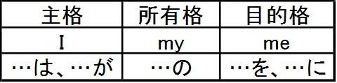
ここまでの内容を前提に、空所に当てはまる適切なものを選んでみよう。
【問題1】 The man gave ( he, his, him, she ) a nice present.
【問題１解答】
「その男は...にすてきなプレゼントをあげた」の意味。
選択肢の中で「...に」の意味つまり目的格になるのはhimだけである。
（答）him
【問題2】 (His, They, Our, Me) asked several questions.
【問題２解答】
文の意味は「...はいくつかの質問をした」である。
選択肢の中で「...は」の意味つまり主格であるものは、Theyだけである。
（答）They
【問題3】 The boy tried to support (her, she, their, his).
【問題３解答】
「少年は...を支えようとした」の意味。
選択肢の中で「...を」の意味つまり目的格であるのはherだけである。
(答) her
【問題4】 When she removed (she's, he's, hers, her) sunglasses, she turned out to be pretty.
(remove：...を取る turn out to be...：...と判明する、...とわかる)
【問題４解答】
「彼女がサングラスを取った時、彼女はかわいいと判明した[サングラスを取ると、彼女はかわいかった]」の意味。
「...のサングラス」となるべき場合だから、所有格のherを選ぶ。
her sunglassesで「彼女のサングラス」の意味。
(答)her
第２章関係代名詞の格と訳(2)（関係詞の格）
格（主格・所有格・目的格）が確認できたところで、関係代名詞の格に進もう。
IがI-my-meになったのと同じように、関係代名詞whoにもwho-whose-whomの三つがある。
これらはどのように使い分けるのだろうか。who, whose, whomの使い分けの問題である。
関係代名詞は二つの文章が組み合わさってできている、と考えるとわかりやすい。
たとえば、「私はその公園で、怪しい振る舞いをする男性によく会います」という意味の英文を作りたいとしよう。
まずは、修飾の関係にある部分を見つけ出そう。上の例で言えば、「怪しい振る舞いをする」の部分は、「男性」にかかっている。
「怪しい振る舞いをする」のようにある語（ここでは「男性」）にかかっている語を「修飾語」という。
他方、「男性」のように修飾語によって修飾されている語を被修飾語という。
まず上のように「どの部分が他の語にかかっているか」を判断し、修飾語の部分をカッコでくくってしまう。つまり次のようにする。
そしてカッコでくくられた部分は無視した英文を作る。
つまり「私はその公園で、（怪しい振る舞いをする）男性によく会います」と考えて、「私はその公園で、男性によく会います」という英文を作る。
① I often seea man in the park.
(私はしばしばその公園で人に会う)
次に「怪しい振る舞いをする」の部分を英語で表現する。主語が抜け落ちているから「彼(He)」を補うと次のようになる。
②He behaves suspiciously.
(彼は怪しく振る舞う)
このように、「修飾語・被修飾語」を明らかにした上で二つの英文を作ったら、関係代名詞の登場である。
そのやり方は次の通りである。
上の(a)(b)の二つの文のa man = heのようにイコールで結びつけることのできる同じものを見つける。
二番目のHeと同じ格の関係代名詞を選ぶ。ここではHeは主格だからwhoを選ぶ。そしてHeをwhoに変えてa manの直後に置く。
残りの語句、ここではbehaves suspiciouslyをwhoの後ろにそのままの語順で続ける。
したがって
I often see a manwho behaves suspiciously in the park. となる。
関係代名詞whoの前にある語、ここではa manを「先行詞」という。
先に修飾語と被修飾語の判定で、「怪しい振る舞いをする」の部分が修飾語、「男性」が被修飾語であることを指摘したが、「被修飾語」の部分が先行詞になるわけだ。
上の二つの文の結びつけ方は、これから関係詞がどんどん難しく複雑になっていっても常に当てはまる考え方である。
だから、このやり方をマスターすれば、関係詞の大半はマスターできたことになる。だから次章以下の具体例を通じて、この考え方をしっかりマスターしてもらいたい。
第３章関係代名詞の格と訳(3)（訳し方）
この章では「先行詞+関係詞」の訳し方を見てみよう。
前章で作った次の英文を題材に考えてみよう。
I often see a manwho behaves suspiciously in the park.
関係代名詞の前にある語(a man)を先行詞と呼ぶ。
普通は「先行詞+関係代名詞」の形になるわけだが、これを「どのように訳すか」がここでのテーマである。
結論から言うと「先行詞+関係代名詞」は「...する先行詞」の意味になる。
この場合で言えば、a man who behaves suspiciouslyで「怪しい振る舞いをする男」と訳さなければならない。
これは是非きちんと守ろう。
関係詞がよくできなくなる人の多くは、ここでつまずいているからである。
例えば上の(A)の英文
I often see a manwho behaves suspiciously in the park.
を、
「私は公園で男が不審な振る舞いをするのをよく見ます」（×）
と訳すのは絶対によくない。
「...する先行詞」の原則にしたがって、「不審な振る舞いをする男（をよく見ます）」としなければならない。
並べ変え問題や英作文等で特に「語順」の問題に悩まされた経験がある方は、この問題を決しておろそかにしてはいけない。必ず「...する先行詞」という訳を作るよう心がけよう。私の経験から言って、「英語の語順がよくわからない」という人のおよそ8割は、この問題をおろそかにしていることに原因がある。
「男が不審な振る舞いをする（のを見る）」も、「不審な振る舞いをする男（を見る）」も内容的には同じじゃないかと思った方は、言葉の論理性への配慮が足りない。
(A)の英文では私が見たのは「男(a man)」なのであって「男が不審な振る舞いをすること」つまり「男の不審な行動」を見たのではない。
確かに両者は内容的には同じである。しかしseeの目的語が異なっている。
「男」を見たのか、「男の不審な行動」を見たのかの違いである。
言語はこのように人を見ているのか、人の行動をみているのかを厳密に区別するものであり、これは英語も日本語も同じである。
両者の違いを混同している人は、世間的にはむしろ「頭の良い優秀な人」に多く見られる。「要はこういうことね...」と問題の本質を鋭く見極める優秀な人が陥りやすい盲点だ。
しかし言葉というものはもっと形式的というか「論理」的なものであって、「人を見るか」「人の行動を見るか」を区別するものなのである。
そして英文法は、その論理を学ぶものである。この問題を理解しないと、文型(S+Vか,S+V+Oかなど)の問題も理解が困難になる。
英文解釈であれば「こなれた日本語訳を作る」「わかりやすい日本語を作る」という目的があり、それにしたがって考えるのがよい場合もあるだろう。しかし英文法は英文の構造や文型を理解することが不可欠である。だからその論理に従った訳を作るように心がけよう。
それでは以上の内容を問題演習の形で確認してみよう。
次の二つの英文を関係代名詞を使って一文にした時、空所に入る語を記せ。
また完成した英文を和訳せよ。
【問1】
She looked at the man. + He had come in.
→She looked at the man （ ）（ ）（ ）（ ）.
【解説】
関係代名詞を使って二つの英文を結び付ける場合には、まず同じものを見つける。ここではthe manとHeは同一人物であるから、これに着目する。

そして二番目のHeと同じ格の関係代名詞を選ぶ。
ここではHeは主格だからwhoを選ぶ。そしてHeをwhoに変えてthe manの直後に置く。
最後に残りの語句（ここではhad come in）をwhoの後ろにそのままの語順で続ける。
こうして次の英文ができあがる。
She looked at the man who had come in.
この英文の意味はどうなるだろうか。「...する先行詞」と訳すべきだから、the man who had come inで「入ってきた男」と訳すべきである（「男が入って来たのを見た」(×)とか「入ってくるのを見た」(×)は不適）。
（答）She looked at the man who had come in.
（和訳）彼女は入ってきた男を見た。
【問2】次の二つの英文を関係代名詞を使って結び付け、できた英文を和訳せよ。
A woman lent me an umbrella. + She happened to pass by.
(happen to：たまたま...する pass by：近くを通りかかる)
【解説】
A womanとSheは同一人物。
Sheは主格だからSheをwhoに変えて、A womanの直後に置く。
残りのhappened to pass byはwhoの直後に続ける。
こうして次の英文が完成する。
A womanwho happened to pass by lent me an umbrella.
和訳は、先行詞はA womanであり、「先行詞+関係代名詞」は「...する先行詞」と訳すべきだから、a woman who happened to pass byで「たまたま近くを通りかかった女性」と訳そう。
したがって全体では「たまたま近くを通りかかった女性が私に傘を貸してくれた」とする。
「女性がたまたま近くを通りかかって、私に傘を貸してくれた」(×)と訳してはいけない。
（答）A woman who happened to pass by lent me an umbrella.
（和訳）「たまたま近くを通りかかった女性が私に傘を貸してくれた」
【問3】
The boy was not prosecuted. + He stole the money.
(prosecute：起訴する)
【解説】
第二文のHeをwhoに変えて、残りのstole the moneyをそのまま続ける。
したがって完成した英文は次のようになる。
The boywho stole the money was not prosecuted.
和訳は、the boyが先行詞だからthe boy who stole the moneyで「その金を盗んだ少年」の意味。全体では「その金を盗んだ少年は起訴されなかった」とする。
「その少年は金を盗んだが起訴されなかった」(×)と訳してはいけない。
今度はこれまでの学習の集大成として、次の日本文の英訳にチャレンジしてみよう。
【問4】
次の日本文を英訳せよ。
「この本を書いた人が明日私たちの学校に来ます」
＜考え方＞
「先行詞＋関係代名詞」が「...する先行詞」の意味になることに着目して、修飾語・被修飾語を明確にする。
「この本を書いた」が修飾語、「人」が被修飾語である。だから「人」が先行詞、「この本を書いた」の部分が関係代名詞を使った部分になるわけだ。
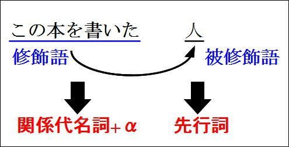
そこで被修飾語の部分を削除した形を考える。具体的には「（この本を書いた）人が明日私たちの学校に来ます」と考えて、「人が明日私たちの学校に来ます」という英文を作る。
（A) The man will come to our school.
(B) 「この本を書いた」の部分を英語にする。主語が抜け落ちているからHeを補って次のようにする。
He wrote this book.
(C) ①のThe manと②のHeは同一人物である。
だから②のHeをwhoに変えてThe manの後ろに続ける。
残りの語句をwhoの後ろに続ける。
The manが先行詞となる。「この本を書いた人」という表現で、「この本を書いた」が修飾語、「人」が被修飾語であり、「人」つまりThe manが先行詞になるわけだ。
＜英作文のやり方（まとめ）＞
（１）修飾語・被修飾語の関係を明らかにして、二つの文を作る。
（２）二文の結合方法は、先行詞の直後に関係代名詞を置き、その後ろは残った語句をそのままの語順で続ける。
（３）使う関係代名詞の格は、結合する前の英文と同じ格を使う。例えば元の英文がheやsheならばwhoを使う。
（４）「先行詞＋関係代名詞」は「...する先行詞」の意味になる。
第４章関係代名詞の格と訳(4)（目的格）
本章では「目的格」の関係代名詞whomを見よう。
who-whose-whomのwhomを使うのはどういう場合か、
そしてどのように英文を完成させるか、
という問題だ。
基本的な作り方は、主格の関係代名詞whoと同じである。
「こちらが、私が昨日会った女の子です」を英訳する場合で見てみよう。
まず修飾語・被修飾語の関係を明らかにしよう。
「私が昨日会った」が「女の子」にかかっているから、「私が昨日会った」が修飾語・「女の子」が被修飾語である。
そこで「こちらが、（私が昨日会った）女の子です」と考えて、「こちらが女の子です」という英文を作る。
① This isthe girl.
「私が昨日会った」は「私はその少女に昨日会った」ということだから次のようになる。
② I mether yesterday.
こうしてできた二つの英文を関係代名詞を使って結び付ける。
①のThe girlと②のherは同一人物である。
②のmet herは「彼女に会う」の意味だからherは目的格(she-her-herの三番目)である。
こういう場合は関係代名詞もwhomを使う。who-whose-whomのwhomである。
herが三番目だから関係代名詞も三番目を使うわけだ。
そしてこのwhomを先行詞the girlの後ろに置く。
②の残りのI metとyesterdayはwhomの後ろに続ける。
こうしてThis is the girl whom I met yesterday.が完成する。
＜補足説明＞
目的格の関係代名詞はwhomを使うのが原則である。しかし口語表現ではwhomの代わりにwhoを使うことがある。
ex. the friend(who) I wrote to = the friend (whom) I wrote to (私が手紙を書いた友人）
口語ではwhomを使うべき場合にwhoを使う傾向があり、それが関係代名詞としての用法にも及んだものである。
cf.Who are you looking for?
=Whom are you looking for?
(誰を探しているのですか）
大学入試は「正規の英文法」、つまり「学校英文法」に基づき出題されるのが基本である。
そこで本書の基本的な姿勢は、この「学校文法」を解説することを第一次的な使命ととらえている。
ですから口語英語は本書の内容を超えた「ハイレベル」な問題と考えます。
その内容は、本書読了後にさらに学習を深化させる際に学習していただければ、と思います。
第５章関係代名詞の格と訳(5)（先行詞の選択）
続いては「先行詞の選択」という問題を考えてみよう。
「あなたが今朝お会いになったご婦人は、音楽の教授です」という英文を作りたいとしよう。
これは次の二つの英文を関係代名詞を使って結び付ければよい。
①The lady is a professor of music.
(ご婦人は音楽の教授です)
②You met her this morning.
(あなたは今朝、彼女に会いました)
関係代名詞を使って二つの英文を結びつける場合には、「同じもの」を見つける必要がある。
しかし、②のherとイコール(=)の関係に立つのは、The ladyだけではない。
her = a professor of musicという関係も成り立つ。
そのためどちらを先行詞にするか、という問題が発生する。
The ladyを先行詞とすると、
③Theladywhom you met this morningis a professor of music.
となる。
他方a professor of musicを先行詞とすると、
④The lady isa professor of musicwhom you met this morning.
となる。
上で示した日本語「あなたが今朝お会いになったご婦人は、音楽の教授です」という意味の英文を作りたい場合は、どちらを選ぶべきだろうか。
結論的には③が正しく、④は間違いである。
それは何故か？
「先行詞+関係代名詞」は「...する先行詞」と訳すべきである。
それに従うと③のThe lady whom you met this morningは「あなたが今朝会ったご婦人」となる。したがって完成した英文の訳は「あなたが今朝会ったご婦人は、音楽の教授です」となる。
他方、④の
a professor of musicwhom you met this morning
の訳は「あなたが今朝会った音楽の教授」である。
そのため完成した英文
The lady is a professor of music whom you met this morning.
は「その女性は、あなたが今朝会った音楽の教授です」となってしまう。
これは作ろうと思っていた文章とは違う意味になってしまっている。だから正しくないのだ。
このように、「先行詞をどちらにするか」の判断は、完成した英文がどのような意味になるのかをよく考えながら行う必要があるわけだ。
その際には「先行詞+関係代名詞」の訳は「...する先行詞」となることに注意しよう。
第６章関係代名詞の格と訳(6)（目的格の省略）
それでは今度は空所にはどのような関係代名詞が入るかを考えてみよう。
次の英文で空所にはどのような関係代名詞が入るだろうか。与えられた選択肢の中から答えよ。
【問①】We need a person （ ）speaks English well.
［選択肢］who, whose, whom
【問②】He is a statesman （ ）I deeply respect.
(statesman：政治家)
［選択肢］who, whose, whom
どちらも関係代名詞を使って結びつける前の二つの英文を考えよう。
【問①】は
We needa person.
(私たちは人を必要としている)
He/shespeaks English well.
(彼/彼女は英語を上手に話す)
そしてa person = He/sheである。He/sheは主格だから、これはwhoに変わる。
したがって
① We need a personwho speaks English well.
となる。
和訳は「...する先行詞」に気をつけよう。
（訳）私たちは英語を上手に話す人が必要だ。
【問②】は
He isa statesman.
(彼は政治家だ)
I deeply respecthim.
(私は彼を深く尊敬している)
そしてa statesman = himである。himは目的格だから、これはwhomに変わる。
したがって
He is a statesmanwhom I deeply respect.
となる。
和訳は「...する先行詞」に注意しよう。
（訳）彼は私が深く尊敬している政治家だ。
このように関係代名詞にどのような語を使うかは、二つの英文を考えてそれを結びつける習慣を身に付けるとよいだろう。
前章までの内容の確認が終わったところで、「関係代名詞の省略」に話しを進めよう。
目的格の関係代名詞は省略できる。
例えば、【問②】では目的格whomを使ったが、この文では次のようにwhomを省略できる。
He is a statesman(whom) I deeply respect.
だから例えば
the man I met yesterday
という英文があったら、
the man (whom) I met yesterday
ということであり、先行詞はthe manであるから
①「私が昨日会った男」（○）
の意味になる。
関係詞が苦手な人はthe man I met yesterdayを
②「私はその男に昨日会った」（×）
とか、
③「その男には、昨日会いました」（×）
④「その男は昨日私に会った」（×）
などと誤訳しがちである。
確かに上の①～④の訳は、どれも私が昨日その男に会ったという内容を表している。だから内容に着目すれば、どれも同じことを表現している。
しかしこれまで何度も強調してきたように「先行詞+関係代名詞」は「...する先行詞」の訳になるから、「私が昨日会った男性」としなければならない。
ところで
①「私が昨日会った男」と、
②「私はその男に昨日会った」とでは、
実質的にはどのような違いがあるのだろうか。
両者の違いは、それを使って別の文を作れるかどうか、が決定的に異なる。
①と②を使って、文章を一つ作れるかどうか見てみよう。
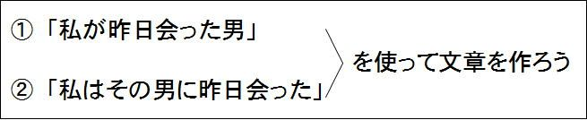
①は例えば「私が昨日会った男はお医者さんでした」などのように、それを使って別の文を作ることができる。別の言い方をすると、「私が昨日会った男」は文の一部（パーツ）になる。
しかし②「私はその男に昨日会った」はもう文章として完成している。だからそれを文の一部にして別の文を作ることはできない。
このように関係代名詞を使った表現は、別の文の一部になることが出来るという特徴を持つ。この点が関係代名詞を使った文の最も重要なポイントである。
以上を前提に、それぞれの英文がどのような意味になるのかを確認してみよう。
【問③】
The girl John married is a nurse. (和訳せよ）
【問③解答】
the girl (whom) John marriedは「ジョンが結婚した女性」の意味である。
したがって全体では「ジョンが結婚した女性は看護婦です」となる。
「ジョンは看護婦と結婚した」（×）ではない。その意味を表す英文はJohn married a nurse.である。
【問④】
The woman he is talking to is his wife. （和訳せよ）
【問④解答】
the woman (whom) he is talking toということだから、「彼が話しをしている女性」とならなければならない。
したがって全体では「彼が話しをしている女性は彼の妻です」となる。
「彼は彼の妻と話しをしている」（×）はダメ。それはHe is talking to his wife.である。
第７章関係代名詞の格と訳(7)（先行詞が物の場合）
これまでは先行詞が人の場合に関係代名詞としてはwho-whose-whomを使うことを見てきた。次は先行詞が物の場合を見てみよう。
先行詞が物の場合はwhichを使う。格変化は次の通りだ（which-whose-which)。
【例１－主格】
「将来の見込みがないビジネスを始めることは愚かだ」を英訳する場合を考えてみよう。
考え方の基本はこれまでと同じだ。
まず修飾語・被修飾語の関係を明らかにしよう。「将来の見込みがない」が「ビジネス」にかかっている。だから「将来の見込みがない」が修飾語、「ビジネス」が被修飾語だ。
だから「（将来の見込みがない）ビジネスを始めることは愚かだ」と考えて、「ビジネスを始めることは愚かだ」という英文を作る。
①It is absurd to starta business.
(ビジネスをはじめるのは愚かだ)
「将来の見込みがない」は主語が落ちているから「それ(It)」を補って次のようにする。
②It has no future prospects.
(それは将来の見込みがない)
そして①と②を関係代名詞を使って結び付ける。
①のa business と②のItは同じものだからa businessを先行詞にする。
②のItは主格だからwhichに変えて先行詞a businessの直後にこれを置く。
残りは関係代名詞の直後にそのまま続ける。
したがって
It is absurd to start a businesswhich has no future prospects.となる。
【例2－目的格】
「私は最近買った辞書をなくしてしまった」を英語に直す場合を考えよう。
まず修飾語・被修飾語の関係から見よう。
「最近買った」が「辞書」にかかっているから「最近買った」が修飾語、「辞書」が被修飾語。
従って「私は（最近買った）辞書をなくしてしまった」と考えて、「私は辞書をなくしてしまった」を英語にする。
①I have lostthe dictionary.
(私は辞書をなくしてしまった)
「最近買った」は、主語と目的語が抜け落ちているから主語の「私(I)」、目的語の「それ(it)」を補って次のようにする。
②I boughtit recently.
(私はそれを最近買った)
そしてこれを関係代名詞によって結び付ける。
①のthe dictionary と②のitは同じものだから、the dictionaryを先行詞にする。
itはboughtの目的語で目的格だから目的格の関係代名詞whichに変えて先行詞the dictionaryの直後に置く。
残り(I boughtとrecently)はwhichの後ろにそのままの語順で続ける。

したがって
I have lost the dictionary which I bought recently.
上の表現で、目的格(which)を使う場合は省略できることも、whomと同じだ。
つまりthe dictionary (which) I bought recentlyという形でwhichを省略できる。
和訳については
① I bought the dictionary recently.
であれば、「私は最近その辞書を買った」の意味になるが、
② the dictionary I bought recently
であれば、「私が最近買った辞書」の意味になる。
②なら、それを文のパーツとして使い、一つの文章を作ることができる。
例えば次のように。
「私が最近買った辞書は使い物にならない」
The dictionary I bought recently is of no use.
これに対して①「私は最近その辞書を買った（I bought the dictionary recently.）」は文章としてはもう完成しているから、これを文のパーツとして使うことはできない。
第８章関係代名詞の格と訳(8)(thatの用法)
関係代名詞はwhoやwhichの他にthatもある。
主格-所有格-目的格を示すと次のようになる。
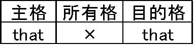
「that無しthat」と覚えると良いだろう。
who, which, thatをまとめると次のようになる。
thatの細かい用法は、第２部（高校で学ぶ関係詞の用法）で詳説する。
ここまでの内容を実際の入試問題で確認してみよう。
【第５巻 確認問題１】
This is the very watch（ ）I have been looking for.
（選択肢）
a. what
b. that
c. as
d. whom（愛知大）
（注）the very：「まさにその...」
【第５巻 確認問題1解説】
This is the very watch.
(これはまさにその時計だ)
と
I have been looking for it.
(私はそれをずっと探し続けてきた)
との二つの英文を関係代名詞を使って結び付けたもの。
the very watch = itだから、このitをthat(=which)に変えてthe very watchの後ろに持ってくればよい。
the very watch that I have been looking forで「私がずっと探し続けてきたまさにその時計」の意味。
完成した英文(This is the very watch that I have been looking for.)は、「これは私がずっと探し続けてきたまさにその時計だ」の意味。
【解答】
b. (that)
次は並べ変え問題。早稲田の問題だから難しい。
最初はできなくても悲観するには及ばない。
最終的にはここまでできるようになろう、というぐらいの気持ちで取り組んでもらいたい。
【第５巻 確認問題２】
Mr. Brown tells me that he is beginning to realize that many of the ideas about Japan（ ）（ ）（ ）（ ）（ ）（ ）（ ）（ ）.（早大）
（選択肢）[have, he, not, that, to, true, used, were]
（注）realize：「実感する、悟る」
used to (do)：「昔は...だった」
(ex. He used to be rich. 彼は昔は金持ちだった）
【第５巻 確認問題２解説】
前半のMr. Brown tells me that he is beginning to realize that...は「ブラウンさんはthat...を実感し始めていると私に語っている」の意味。
that以下の部分は
① many ofthe ideas about Japan were not true
(日本についての考えの多くは正しくなかった)
というセンテンスと、
② he used to havethem
(彼はそれを昔は持っていた)
というセンテンスを関係代名詞を使って結び付けたもの(them = the ideas about Japan)。
used to (do)は＜過去の状態＞を表し「昔は...だった」の意味。ここではheused to haveはhehadとほぼ同義。
①のthe ideas about Japanと②のthemとが同一物。
themは目的格だから関係代名詞that(目的格)に置き変えて、先行詞（the ideas about Japan）の後ろに置く。
残りのhe used to haveを関係代名詞thatの後ろにそのままの語順で続ける。
和訳は、the ideas about Japan that he used to haveで「彼が昔持っていた日本についての考え」。
したがって完成した英文は次のようになる。
Mr. Brown tells me that he is beginning to realize that many ofthe ideas about Japanthat he used to have were not true.
「ブラウンさんは、彼が昔持っていた日本に関しての考えの多くは間違っていたと実感し始めていると私に語っている」
【解答】
Mr. Brown tells me that he is beginning to realize that many of the ideas about Japan (that)(he)(used)(to)(have)(were)(not)(true).
これで、「中学で学ぶ関係代名詞の用法」は終了である。次章からは、高校で学ぶ関係詞の用法を見ていこう。
第９章関係詞の制限用法と非制限用法(1)
関係詞には制限用法と、非制限用法という二つの用法がある。
両者の相違はコンマ(,)の有無である。
例えば、
(A) She has a son who won the speech contest.
(彼女には弁論大会で優勝した息子がいる）
という例文で考えてみよう。
上の(A)の用法は、中学までに学習した関係代名詞としての用法である。
このa son who won the speech contestは、a sonが先行詞、whoが関係代名詞である。このような「先行詞+関係代名詞」は「...する先行詞」の意味になる。だから「弁論大会で優勝した息子」の意味になる。
中学までに学ぶこのような用法は「制限用法」とか「限定用法」と呼ばれる（なぜこう呼ばれるかについては後に述べる）。
これに対して上の(A)の英文でsonの後ろにコンマ(,)を置く場合がある。
(B) She has a son, who won the speech contest.（文の意味は後述）
このような用法は「非制限用法」とか「継続用法」と呼ばれる。
前者は「制限用法」あるいは「限定用法」、後者は「非制限用法」あるいは「継続用法」ということで、呼び方はそれぞれ2つある。
ここではわかりやすさの観点から、「制限用法」と「非制限用法」という言葉を使うことにしよう。
「非」が付くか、付かないかの違いだ。
あらかじめお断りしておくが、「コンマ(,)が付かないと制限用法、コンマ(,)が付くと非制限用法」(×)というような丸暗記はしないでもらいたい。ここでも大切なことは、その内容をしっかり理解することだ。そうすれば、なぜ「制限用法」と呼ばれるのかが、自然に見えてくるはずだ。
両者の違いはコンマ(,)の有無だけであり、本当に小さな違いだ。
人間の顔でいえば、「ホクロが1つあるか、ないか」といった程度の違いでしかない。
しかしそういう外見上の些細な相違にもかかわらず、両者の相違は言葉の本質に関わる重要な問題を含んでいる。
だから、きちんとした英文を書こうと思ったら、両者の区別は正確にできなければならない。
特に大学入試で英作文が出題されるのであれば、両者の区別は是非とも正確にできるようにしておこう。
「理解」さえしてあれば、それは決して難しい話しではない。
それでは両者はどのように使い分けるべきかを念頭に置きながら、両者の相違を見ていくことにしよう。
まずコンマ(,)のない英文から。
(A)She has a son who won the speech contest.
このa son who won...は「先行詞+関係詞」の形であり、このように関係代名詞を使った英文は「...する先行詞」と訳す。だからこの英文の意味は次のようになる。
（訳）「彼女には弁論大会で優勝した息子がいる」
これに対してコンマ(,)を付けた英文は次のようになる。
(B)She has a son, who won the speech contest.
この文が(A)の文と異なるのはコンマ(,)だけだ。
コンマ(,)が付くということは、そこで文が切れるということだ。
コンマ(,)がない場合と比べてコンマ(,)がある方が、文を区切る力が働く。
だから前半部分は、「彼女には息子がいる」の意味になる。
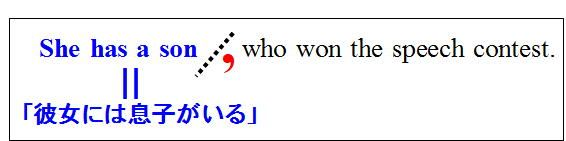
そして先行詞のtwo daughtersとwhoは同一人物である(a son=who)。
だから全体では、
(B)「彼女には息子がいて、彼は弁論大会で優勝した」の意味になる。
コンマ(,)があれば文が切れる、なければ切れない。それだけのシンプルな事実からこのような違いが生まれるわけだ。
ただそのような和訳ができたことに満足するのではなく、二つの英文はどのようなニュアンスの違いを持っているかということまで、更に注意を払っておこう。
(A)「彼女には弁論大会で優勝した息子が一人いる」
と、
(B)「彼女には息子が一人いて、彼は弁論大会で優勝した」
との相違だ。両者のニュアンスにはどのような違いがあるだろうか。
まず(B)の「彼女には息子が一人いて、彼は弁論大会で優勝した」において、彼女の息子は何人いるだろうか。
「息子が一人いて」と言っているのだから、彼女の息子は一人だ。息子は一人で、彼が弁論大会に優勝したわけだ。
これに対して、「彼女には弁論大会で優勝した息子が一人いる」ではどうだろうか？息子は一人で確定だろうか？
弁論大会で優勝はしなかった、あるいはそもそも弁論大会に出場しなかった息子が他にいるかもしれない。だから本当は、お兄さんがいて彼が記念写真を撮ってくれていたのかもしれない。
(A)の「弁論大会で優勝した息子が一人いる」は、話題を「弁論大会で優勝した息子」に限定（制限）している。そうではない息子がいるのかどうかについては、何も触れられていない。
本当はお兄さんがいるかもしれないのに、優勝した息子にだけ焦点を当て彼のことだけを述べているわけだ。
だから「そうではない息子がいるかもしれない」というニュアンスが生まれる。
「弁論大会に優勝した息子」という表現は、「弁論大会に優勝した」という表現が加わることによって、単なる「息子」に限定を加えている。図で表すと次のような形になる。
つまり「弁論大会で優勝した」の部分は、対象を絞り込む働きがある。そしてその「絞り込み」からもれた息子（それ以外の息子）が他にもいるかもしれない、というニュアンスを生む。
このように、「弁論大会で優勝した息子」の「弁論大会で優勝した」の部分は、話題を特定のものに「絞り込む」という働き、言い換えるとある条件を満たすものに「限定」あるいは「制限」する働きがある。だからこの用法を「限定用法」とか「制限用法」と呼ぶ。
ここまでは日本語を使って考えてきたが、問題の本質は英語も日本語も同じである。対象を「絞り込む」、別の言葉で表現すると対象を「限定（制限）」するというのが、制限用法（限定用法）の本質である。
これに対して、「彼女には息子が一人いる、彼は弁論大会で優勝した」という文は、上のような絞り込みをしていない。だから「彼女には息子が一人いる」ということなら、息子は一人だけだということになり、コンマ(,)以下の部分はその息子がどういう息子かを「説明」しているだけだ。
「絞り込む」働きをするか、
それとも
「単に説明する」働きしかしないか、
という点が制限用法と非制限用法の違いである。
「弁論大会で優勝した息子」のように、「息子」絞り込む働きをするのが制限用法であり、これはコンマ(,)を付けない、ということだ。
このような「絞り込み」の働きがあるかどうかという点に着目して、次の二つの日本文を比べてもらいたい。
①「私は試験に合格した生徒から話しを聞きたい」
②「私はパンダで有名な上野動物園に行きたい」
①の「試験に合格した」も、②の「パンダで有名な」も、後ろに続く「生徒」「上野動物園」にかかっている点では同じだ。
しかし上で述べた「制限」=「限定」という働きがあるかどうかという観点から、それぞれの表現を見比べて欲しい。
①の「試験に合格した生徒から話しを聞きたい」では、話しを聞きたいのは、「試験に合格した生徒」なのであって、試験に落ちた人の話しには余り興味はないというニュアンスだ。
受験者である生徒の中の一部の人しか合格できないのだから、「試験に合格した」という言葉は、そうでない生徒を除外し、話しの対象を「合格者」だけに限定（制限）している。
だから「試験に合格した生徒」の「試験に合格した」は図の矢印の働きをしている。「絞り込んで」いるわけだ。
だから①の内容を英語で表すと、次のようになる（関係代名詞whoの前にコンマ(,)を置かない）
I want to hear from the studentswho passed the exam.
(hear from Xは「Xから話しを聞く」の意味）。
これに対して
②「パンダで有名な上野動物園」の「パンダで有名な」はどうだろうか。
①では「生徒」と「試験に合格した生徒」では、円の大きさが明らかに異なっていたが、この場合も同じだろうか。
「パンダで有名な上野動物園」と「上野動物園」とはどのような関係に立つだろうか。
「上野動物園」と「パンダで有名な上野動物園」では円の大きさは変わらない。
両者の相違を図で示すと次のようになる。
「生徒」と「試験に合格した生徒」はその範囲が明らかに異なる。「試験に合格した」という言葉があることによって、その範囲が小さくなる（図の左側）。
これに対して、単なる「上野動物園」と「パンダで有名な上野動物園」では範囲は全く異ならない。「パンダで有名な」という言葉があっても、その範囲に変化はない(小さくなっていない。図の右側）。この「パンダで有名な」という言葉は、上野動物園がどういう動物園かを説明しているだけで、先行詞に限定を加えていない。
このような場合には非制限用法を用いる。
だから「私はパンダで有名な上野動物園に行きたい」は
I want to go to the Ueno Zoo,which is famous for its pandas.←コンマ(,)あり
とする。
これは「私は上野動物園に行きたい、そこはパンダで有名なんですよ」というのと実質的には同じことなのだ。
そして「私は上野動物園に行きたい、そこはパンダで有名なんですよ」というのは、コンマ(,)を付けて文をそこで区切る表現方法だ。だからこの場合はコンマ(,)を付けるのだ。
次は、実際の英文でコンマを付けるべきかどうかを判定してみよう。
(a) 「統計によると日本ではここ数年パートタイムで働く主婦が増えてきている」
Statistics show that the number of housewives （ ） work part-time has increased in the last few years in Japan.
（注）part-time：（副詞）パートタイムで
（選択肢）「who」か「, who」か
(b) 「最近帰りが遅い夫のことが心配だ」
I'm anxious about my husband （ ）comes home late recently.
（選択肢）「who」か「, who」か
(a) 「パートタイムで働く主婦」も、
(b) 「最近帰りが遅い夫」も、どちらも下線部が「主婦」「夫」に係っている。
「パートタイムで働く主婦」は、主婦の中の一部の人達だから、制限（限定）を加えている。
だからコンマ(,)を付けるべきではない。
「最近帰りが遅い夫」というのは、「夫」に対して制限（限定）を加えていない。
これは、「私は夫のことが心配だ、彼は最近帰りが遅い」
というのと実質的な内容は同じである。
だからコンマ(,)を付けるべきである。
（解答）
(a) 「統計によると日本ではここ数年パートタイムで働く主婦が増えてきている」
Statistics show that the number of housewiveswho work part-time has increased in the last few years in Japan.←コンマ(,)なし
(b) 「最近帰りが遅い夫のことが心配だ」
I'm anxious about my husband,who came home late recently.←コンマ(,)あり
第１０章関係詞の制限用法と非制限用法(2)
ここまで学んだ内容を前提にして入試問題にチャレンジしてみよう。
次の二つの英文はどのような相違があるだろうか。
かつて関西学院大学で出題された問題だ。設問は、「次の二つの英文の相違を説明せよ」というもの。
今日ではこういう形式の問題が出されることはほとんど無いが、二つの英文はどのようなニュアンスの違いがあるかを考えてみよう。
(a) Unfortunately the camera which was valuable was stolen.←コンマ(,)なし
(b) Unfortunately the camera, which was valuable, was stolen.←コンマ(,)あり
（注）unfortunately：不運なことに
valuable：価値のある、高価な
(a)は関係代名詞の前にコンマ(,)がないから、the camera which was valuableで「高価なカメラ」の意味である。だから全体では「不幸なことに、高価なカメラが盗まれた」の意味だ。
カメラが何台もあってその中から「高価な」カメラに限定（制限）を加えている状況だ。
だから何台もカメラがあって、その中から「高価なカメラ」たとえばプロが使うような高価な一眼レフカメラが盗まれたようなケースが考えられる。
これに対してコンマ(,)のある場合は、コンマの前で文が切れるから「不幸なことにそのカメラは盗まれた」ということである。

そしてそのカメラに対して、「それは高価だった」という説明が加わっているわけだ。
だから全体では、「不幸なことにそのカメラは盗まれたが、それは高価だったのだ」ということになる。
カメラが何台もある中で「そのカメラが盗まれた」と言っても、「どれが盗まれたのか」は相手には伝わらない。
しかしカメラを一台だけもって歩いている場合に、「そのカメラが盗まれた」と言えば、どれが盗まれたのかは相手に伝わる。
だから「そのカメラ」とだけ言っている(b)の場合は、カメラが一台だけの場合だ。
そして盗まれたそのカメラは「高価だった」というわけだ。
なお、コンマ(,)が付く用法については、後ろの部分にコンマ(,)が付くことにも注意しよう。
これは元々の英文はUnfortunately the camera was stolen.
であり、このthe cameraをwhich以下が説明するもので、挿入表現の一つである。
このような挿入表現では、「挿入表現はここまでだ」ということを示すために、後ろの部分にもコンマ(,)を付ける。
これは関係詞に限らず他の挿入表現にも見られる現象である。
次は選択肢から正解を選ぶ問題。
【第５巻 確認問題３】
John （ ）really likes this place. (関西外大・改)
（選択肢）
(a) who is from New York
(b) , he is from New York,←コンマあり
(c) that is from New York
(d) , who is from New York,←コンマあり
【第５巻 確認問題３解説】
英文の意味は「ニューヨーク出身のジョンは、ここが本当に大好きだ」の意味。
「ニューヨーク出身のジョン」の部分で「ジョン」と「ニューヨーク出身のジョン」との関係は、図の左側の関係ではなく、右側の関係である。
つまり「ニューヨーク出身の」は、ジョンを限定する働きをしていない。
「ニューヨーク出身のジョンは本当にここが好きだ」ということは、「ジョンは本当にここが好きだ、彼はニューヨーク出身だが」というのと内容的には同じことである。
だからそのような意味を表すために、ジョン(John)の後ろにコンマ(,)が付く形にすればよい。
なお、選択肢(b)の「, he is...」が誤りであることについては、第17章（「S+v, S+V」の可否）で詳しく解説する。
従って、whoの前にコンマ(,)を置いた選択肢(d)が正解ということになる。
【解答】
(d)(, who is from New York, )←コンマ(,)あり
第１１章前置詞＋関係代名詞(1)
本章から「前置詞＋関係代名詞」をテーマに考えてみよう。
この問題を理解するためには、「前置詞の目的語」という概念が不可欠になる。これは普通「前置詞」の箇所で学ぶのだが、そこまで学習が進むのを待っているわけにもいかない。だからここではちょっと回り道になるが、「前置詞」の用法を考えてみよう。
前置詞というのは、
「...の中で」の意味のin、
「...と一緒に」の意味のwith
など名詞の前に置かれるものをいう。
「名詞の前に置かれる詞（ことば）」ということで「前置詞」と呼ばれる。
例えば、in the park (公園の中で）
では後ろに名詞のthe parkがあるし、
with Jack (ジャックと一緒に）
では、後ろに名詞（固有名詞）のJackがある。
このように前置詞の後ろには名詞が来る。これを「前置詞の目的語」と言い、目的格を使う。
例えば「ジャックと一緒に」のwith JackでJackは目的格である。
Jackのような固有名詞は主格と目的格が同じ形をしているからわかりにくいが、「彼」の意味のheのような代名詞を使って「彼と一緒に」を表現するとすれば、
withhim
となることからも、前置詞の目的語には目的格を使うことがわかるだろう。
withだけではない。他の前置詞についても、その目的語には目的格を使う。
例えば、
She is kindtome.
(彼女は私に優しい）
She smiledatthem.
(彼女は彼らにほほ笑みかけた）
前置詞の目的語は目的格を使うことを前提にして、関係代名詞と前置詞の関係を考えてみよう。
次の二つの英文を関係代名詞を使って結び付けることを考えてみよう。
① This isthe girl.
(こちらがその少女です）
② I talked to you abouther yesterday.
(彼女に関して私はあなたに昨日話しをした）
②のherは前置詞aboutの目的語になっている。
このような前置詞の目的語の場合も、これまでと同じような形で関係代名詞を使って結び付けることができる。
考え方はこれまでと同じだ。
①のthe girlと②のherは同一人物である(the girl = her)。
だからthe girlを先行詞にし、herを関係代名詞に変えればよい。
herは前置詞aboutの目的語だから目的格。したがってwhomに変えて、先行詞the girlの直後に持ってくる。
そして残りの語句を関係代名詞whomの後ろに続ける。
こうして
This is the girlwhom I talked to you about yesterday.
という英文が完成する。
完成した英文の意味もこれまでと同じように「...する先行詞」とすればよいから、the girl whom I talked to you about yesterdayで、「私が昨日あなたにお話しした少女」の意味になる（全体では、「こちらは私が昨日あなたにお話しした少女です」の意味）。
つまり二文の結び付け方も、完成した英文の意味もこれまでと同じである。
ただし、完成した英文は少し変な形をしている。もう一度英文を見てみよう。
この英文では前置詞が二つ使われている。toとaboutだ。
toは後ろにyouがあって「前置詞+目的語」の形を取っている。
前置詞はこのように後ろに目的語を従えるのが普通の形だ。
しかしaboutについては、目的語になる名詞がない(yesterdayはあるが、これは「...について」の意味のaboutとは無関係でありaboutの目的語ではない）。
このような現象は、元々はabout herとなっていたのに、herがwhomに姿を変えて前に移動したために起きたものである。
herがwhomに姿を変えて移動したためにaboutとwhomは離ればなれになってしまっている。だが元々はabut herで「彼女に関して」の意味を表し、意味の上では両者は結びついている。
そこでこのような意味の上での結びつきを形の上でも表現するために、aboutをwhomの前に移動することができる。
関係詞を使った英文の特徴として、次の点が指摘できる。
意味の上で強い結びつきのあった語句(about her)が
whom...aboutのように離ればなれになっても、
aboutが移動してabout whomになるように、
元々の英文で意味の結びつきがあった語句は、関係詞を作る過程で一旦は離ればなれになっても、また結びつく傾向がある。
恋人の一方が転勤して遠距離恋愛になっても、新幹線を使って会いに行きデートをする恋人同士のように。
なお、この問題は更に「関係代名詞の省略」にも注意する必要がある。
関係代名詞の目的格は省略が可能だ。このことは第一部で解説した（第６章）。
上の英文でwhomはもちろん目的格である。だから省略が可能だ。
This is the girl(whom) I talked to you about yesterday.
しかし、whomを省略した場合は前置詞aboutが前に来ることはない。
This is the girlabout whom I talked to you yesterday.
と言う表現で、whomを省略することはできない。
aboutとwhomは密接な関係があるから前に移動してきたのだが、その相手であるwhomが省略される（whomがいない）というのでは、わざわざ移動していく意味が無い。
つまりwhom君がいない（whomが省略される）のだったら、aboutさんはわざわざでかけて行ったりしない、というわけだ。
aboutさんはwhomがいるから前に行くのであって、前にwhomがいないのだったら遠路はるばる移動したりしない。
なお、このような前置詞の移動は、先行詞が人の場合だけでなく物の場合も可能である。
例えば次の英文を関係代名詞を使って結びつける時は次のようになる。
①This is the pen.
(これは彼のペンだ）
という英文と、
②He wrote the novel with it.
(彼はそれでその小説を書いた）
この場合のwith itは「それを使って」の意味。withはある道具を使う場合に使われて「...を使って」の意味を表す。
ここではitは①の「ペン(the pen)」を指すから、with itは「そのペンを使って、そのペンで」の意味。
the penとitは同一物。
だからthe penを先行詞にし、itを関係代名詞に変えればよい。
itは前置詞withの目的語だから目的格。したがってwhichに変えて、先行詞the penの直後に持ってくる。
そして残りの語句を関係代名詞whichの後ろに続ける。
こうしてThis is the pen which he wrote the novel with.
という英文が完成する。
文末のwithはwhichの前に移動できる。
完成した英文の意味はどうなるだろうか？
ここでも「...する先行詞」の訳が成立する。先行詞はthe penだから、the pen with which he wrote the novelで「彼がその小説を書くのに使ったペン」となる。
したがって全文の訳は「これが彼がその小説を書くのに使ったペンです」となる。
第１２章前置詞＋関係代名詞(2)（問題演習）
ここまでの内容を問題演習で確認してみよう。
まずは英和辞典の例文を元に私が作った問題で予行演習してみよう（出典は問題毎に記載）。
（例題１）
This is a woman （ ）I went to a concert.
（選択肢）
a. whom
b. who
c. that
d. with whom （ジーニアス英和）
（例題1解説）
「こちらは私がコンサートに一緒に行った女性です」の意味。
関係詞の問題を解く場合は、関係詞によって結び付けられる前の二つの英文を考えるとよい。
この場合は、
① This is awoman.
② I went to a concert withher.
a womanとherが同一人物だからa womanを先行詞にする。herを関係代名詞に変えてa womanの後ろに持ってくる。
with herのherは前置詞の後ろだから目的格。だから関係代名詞はwhomを使う。
最後に残りのI went to...を関係代名詞の後ろに持ってくる。
こうして次の英文ができあがる。
This is a womanwhom I went to a concertwith.
そして、文末のwithをwhomの前に移動した形にすれば、問題文の形になる。
This is a womanwith whom I went to a concert.
This is a woman with whom I went to a concert.の意味はどうなるだろうか？
「この女性と私はコンサートに行った」(×)とか、
「私がコンサートに行ったのはこの女性だ」(×)
などはダメである。
「こちらは、私がコンサートに一緒に行った女性です」である。
（答）d. (with whom)
（例題２）
This is the man （ ）we have been discussing the contract with.
（注）contract：契約
（選択肢）
a. who
b. with whom
c. whom
d. whose （ジーニアス英和）
（例題２解説）
discussは「...について話し合う」の意味（他動詞）。
ここでも二つの英文を考えよう。
①This is theman.
②We have been discussing the contract withhim.
（私たちはその契約に関して彼と話し合いを続けてきた）（現在完了進行形により＜継続＞を表す）
manとhimが同一人物だからthe manを先行詞にする。himを関係代名詞whomに変えてthe manの後ろに置く。そして残りをwhomの後ろに持ってくれば次の英文が完成する。
This is the man whom we have been discussing the contractwith.
設問の英文では文末にwithがあるから、空所にはwhomが入る。
（答）c. (whom)
予行演習が終わったところで、続いては実際の入試問題。
【第５巻 確認問題４】
You'd better apply for a job（ ）your skills would be of much use.
（注）apply for a job：仕事に応募する
be of much use：とても役に立つ
（選択肢）
a. which
b. in which
c. how
d. of which （常葉大）
【第５巻 確認問題４解説】
ここでも二つの英文を考えるとよい。
①You'd better apply for ajob.
(君は仕事に応募するべきだ）
②Your skills would be of much useinthe job.
（その仕事の中で君のスキルはとても役に立つ→その仕事をしている時に、君のスキルはとても役に立つ）
②の文でjobを加えるためには、前置詞が必要であることをきちんと理解しよう。これを理解することがこの問題を解くカギだ。
どんな前置詞を使うか(inかofかforかなど）まではわからなくても良い。しかし②の英文でthe jobを加えるには前置詞がどうしても必要だ、ということはキチンと理解しよう。
そのことさえ理解出来れば、後は簡単だ。これまでと同じようにすればいいのだから。
①のa jobと②のthe jobが同一物だから後ろのthe jobをwhichに変えて先行詞(a job)の後ろに置く。
そして残りの語句をwhichの後ろにそのまま続ける。すると次の英文が完成する。
You'd better apply for a jobwhich your skills would be of much usein.
設問の英文では文末にinがないからinがwhichの前に移動した形にする。
完成した英文は次のようになるが、和訳はどうなるだろうか？
You'd better apply fora job in which your skills would be of much use.
「君のスキルがとても役に立つ仕事に応募すべきだ」である。
【解答】b. (in which)
第１３章所有格の関係代名詞(1)
「前置詞＋関係代名詞」が終わったところで、「関係代名詞の所有格(whose)」を考えてみよう。
この関係代名詞の所有格(whose)は、これまでの作り方とは少し事情が異なる。
といっても、注意すべき点は一カ所だけだ。
ここでも二つの英文を結び付けることを考えよう。
①There werea lot of people.
②I didn't knowtheir name.
a lot of peopleとtheirは同じものだからa lot of peopleの後ろにwhoseが来る。
ここまでは今までと同じである。しかし残りの語I didn't knowとnameに関しては、これまでとは異なる扱いになる。
これまでは「残りの語句はそのままの語順で関係詞の後に続ける」であった。だからその原則に従うとwhose I don't know name(×)となるはずだが、そのようにはならない。
whoseの後ろにnameが来て、whose name I didn't knowとなる。
their nameは「彼らの名前」の意味で、theirとnameは意味の上で強く結び付いている。そしてtheirが関係代名詞のwhoseに変わった時にも、その強い結びつきは保たれる形でwhose nameの語順になる。
そして残ったI didn't knowがwhose nameの後ろに「そのままの語順で続く」ことは、これまでと同じだ。
こうして、次の英文が完成する。
There were a lot of people whose name I didn't know.
日本語訳はこれまでと同じように「...する先行詞」とすべきだから、a lot of people whose name I don't knowで「私が名前を知らないたくさんの人々」ということになる（全体では「私が名前を知らない人がたくさんいた」）。
第１４章所有格の関係代名詞(2)「whose+名詞」の書き変え
「whose+名詞」は色々な形に書き変えることができる。
例えば、学習が進んだ人なら次のような書き変えを学んでいるだろう。
The housewhose roof is red was built two years ago.
=The housethe roof of which is red was built two years ago.
(屋根が赤い家は、二年前に建てられた）
この例のように「whose+名詞」は「the+名詞+of+which」に書き変えられる。
どうしてそうなるのかはほとんど語られず、丸暗記していることが多いようだ。
ここではどうしてそのような書き変えが起こるのかを見ていこう。
それによって、更に多くの類似表現が学べるからだ（実は「whose+名詞」は「the+名詞+of which」の他に色々な形に書き変えられるのである）。
まずこのような表現が生まれた前提から考えていこう。
例えば「日本の気候」を英語で表すと、「アポストロフィ(')s」を使って、
① Japan's climate (「ジーニアス英和」より）
とすることもできるし、「...の」の意味のofを使って、
② the climate of Japan
とすることもできる。
このように「...の～」は、
「アポストロフィ(')s」を使ったり、ofを使って表現できる。
whoseを使った英文が色々に書き変えられるのは、この点に基づいている。
whoseを使った英文の書き変えについてはジーニアス英和が詳しいので、その例文を使って解説しよう。
ジーニアス英和辞典（第４版）によると、
(A) The housewhose roof you can just see is Mr. Baker's.
（屋根が見えているだけの家は、ベーカーさんの家だ）
という英文は、次のようにいくつにも書き変えができる。
(B) The house(which/that) you can just seethe roof of is Mr. Baker's.
(C) The houseof which you can just seethe roof is Mr. Baker's.
(D) The housethe roof of which you can just see is Mr. Baker's.
書き変えられる表現がいくつもあるので、圧倒されそうに見えるかもしれない。
しかし、一見複雑に見えるこの書き変えも、これまでの考え方を当てはめればすべて解決できるのだ。つまり丸暗記する必要は全くないのだ。
まず(A)の英文は、次の二つの英文を関係代名詞を使って結び付けたものだ。
①The house is Mr. Baker's.
(その家はベーカーさんの家だ）
②You can just seeits roof.
(君はその屋根だけを見ることができる）
The houseとitsが同一物だからits（所有格）をwhoseにする。そしてその後ろのroofとともにhouseの後ろに移動する。
残りに語句をwhose roofの後ろに続ける。
こうして
(A) The housewhose roof you can just see is Mr. Baker's.
という英文ができあがる。
これは「its roof」を元にしたものだ。
これに対してits roofの代わりにthe roof of itを使って、二つの英文を考えると次のようになる。
①The house is Mr. Baker's.
②You can just see the roof ofit.
The houseとitは同一物で、itはofつまり前置詞の後ろだから目的格。したがって目的格のwhichに変えてThe houseの後ろに移動する。
そして残った語句をwhichの後ろに続ける。
こうして次の英文が完成する。
The housewhich you can just seethe roof of is Mr. Baker's.
この表現でwhichはthe roof ofitのitが姿を変えたものだから目的格である。だからwhichの代わりにthat(目的格）を使うこともできる。
また目的格は省略できるから、このthatまたはwhichは省略できる。
(B) The house(which / that ) you can just seethe roof of is Mr. Baker's.
これがジーニアス英和の(B)の例文だ。
この(B)の表現で後ろにある前置詞ofは元々はthe roof of itの形を取っていたから前に移動することができる。
この場合はwhichは目的格だが省略はできない。「前置詞＋関係代名詞」での解説で比喩を使って説明したように、「恋人がわざわざ新幹線でやって来るのは、相手であるwhichがいる時だけ」だからだ。これがジーニアス英和の(C)の例文だ(ただし、of that(×)とはできない。第24章（thatを使うべき場合）で解説する。
この表現ではof whichとthe roofが離ればなれになっているが、元々はthe roof of itという形を取って、意味の上で結びついていたので、その元々の形を取るためにthe roofが前に移動することがある。
これがジーニアス英和の(D)の例文だ。
以上で(A)～(D)の英文ができる理由を示したことになる。
ここまで見てくると、関係代名詞は非常に規則的であって、理屈さえ理解してあれば丸暗記すべきことがらはほとんど無いことに気付かれたのではないだろうか。
これまでに関係詞の学習をしたことがある方ならば、
「関係詞は細かい規則がたくさんあって大変だ」
と思われたことが一度はあることだろう。
どうしてそうなるのかを理解していないと、覚えるべき規則がたくさんあって当惑するほどだ。しかしどうしてそうなるのか、問題の本質を理解しさえすれば暗記するべきことがらはほんの少しでしかない。
問題の本質を理解するという勉強方法は、その内容が難しくなればなるほど効果的なものになる。簡単に言えばどんな難しい表現も、「規則の当てはめ」によって全部解決できてしまう。
だからこの本では、関係詞の最も難しい内容まで積極的に解説していくことにしよう。
第１５章所有格の関係代名詞(3)（問題演習）
ここまでの内容を入試問題で確認してみよう。
関係詞の問題は、関係詞によって結び付けられる前の二つの英文から丁寧に考えていけば、決して難しくはない。必ず二つの英文からスタートする習慣を身に付けよう。
【第５巻 確認問題５】
This book is for students（ ）native language is not English.
（選択肢）
a. of whom
b. that
c. which
d. whose （東京理科大）
【第５巻 確認問題５解説】
① This book is forstudents.
(この本は学生のためのものだ）
と
②Their native language is not English.
(彼らの母国語は英語ではない）
の二つの英文を結び付けたもの。
①のstudentsと②のTheirが同一人物だから②のtheirをwhoseに変えればよい。
したがって完成した英文は次のようになる。
This book is for studentswhose native language is not English.
日本語の意味は「この本は母国語が英語でない学生のためのものだ」の意味。
なお、This bookis for students.のように、be動詞の後ろに前置詞が直接続く場合は、次のように前出の語（ここではbook)が省略されたものだと考えるとわかりやすい。
This book is(the book) for students.
【解答】
d. (whose)
【第５巻 確認問題６】
Yesterday Mary gave me a book the cover（ ）was blue.
（選択肢）
a. what
b. which
c. of which
d. that （桜美林大）
【第５巻 確認問題６解説】
①Yesterday Mary gave me abook.
(昨日メアリーは私に本をくれた）
と、
②The cover ofit was blue.
(その表紙は青だった)
とを関係代名詞で結んだもの。
②のit（ofの後ろだから目的格）をwhich（目的格）に変えてa bookの後ろに置く。
which the cover of...のofをwhichの前に移動する。
更にthe coverを ofの前に移動させる。
したがって完成した英文は次のようになる。
Yesterday Mary gave me a bookthe cover of which was blue.
日本語の意味は、「昨日メアリーは私に表紙が青い本をくれた」の意味。
【解答】
c. (of which)
第１６章of whomを使った表現
ここまでは「whose ～」＝「the ～ of which」を扱ったが、ofを使った類似の表現はこれ以外にも数多い。
次の例のようにtheを使わないこともあれば、whichではなくwhomを使う場合もある。
There were ten mountaineers,three of whom were women.
(登山者が10人いたが、そのうちの3人は女性だった）（プログレッシブ和英「そのうち」）
この表現ではwhichではなくwhomを使っているが、これは関係詞によって結び付けられる前の2つの英文を見れば納得できるだろう。
①There were tenmountaineers.
（10人の登山者がいた）
②Three ofthem were women.
（彼らのうちの３人は女性だった）
①のmountaineersと②のthemは同一人物だから、themがwhomに変わってmountaineersの後ろに続く。
そして意味のまとまりのあるthree ofがwhomの前に来る。
このように元になる二つの英文を考え、それを出発点にして関係詞を使うことを考えていく習慣を身に付ければ、類似の問題は容易に解けるようになるだろう。
この手の問題はよく出題される。実際の問題で確認してみよう。
【第５巻 確認問題７】
I met a group of hikers,（ ）were university students.
（選択肢）
a. some of them
b. many of them
c. some of whom
d. some of which （京都産業大）
【第５巻 確認問題７解説】
問題文は次の2つの英文を関係代名詞で結んだものである。
①I met a group ofhikers.
②Some ofthem were university students.
とを結んだもの。
①のhikersと②のthemは同一人物だから、themをwhomに変えてその直後に移動する。
そしてsome ofがwhomの前に移動する。
したがって完成した英文は次のようになる。
I met a group of hikers,some of whom were university students.
これはコンマ(,)があって、非制限用法である。だから日本語の意味は
「私はハイキングの旅行者に出会ったが、そのうちの何人かは大学の学生だった」ということである。
【解答】
c. (some of whom)
上で述べた関係詞を使った二文の結び付け方は、これまで何回も繰り返してきた事柄だからもうおなじみだろう。
しかしここでは少し視点を変えて、選択肢b.のmany of themについて、もう少し深く考えて見ることにしよう(選択肢a.のsome of themにも同じ議論が当てはまる。だが2つのことを同時に扱うと問題が複雑になりすぎてしまう。ここではわかりやすさを優先し、manyを使った表現で考えることにする）。
それは上の問題で空所にsome of whomが入りこれが正解になるのはよいとして、many ofthemは正解になり得ないのか、という問題である。
manyはsomeと同じような使い方がある。
つまり
Some of them were university students.
（彼らのうちの何人かは大学生だった）
のSomeをManyに変えて
Many of them were university students.
(彼らの多くは大学生だった)
とすることもできる。
だからそれを使って、
I met a group of hikers, many ofthem were university students. (?)
とできるのではないかという疑問が生ずるし、事実、上の問題で選択肢b.のmany of themを選ばれた方もいるのではないだろうか。
入試問題であるから正解は一つである。問題作成者がミスをしない限り一方が正しければ、もう一方は誤りだ。
だからsome of whomが正解なら、many of themは誤りだ。
だから結論的にはmany of themが空所に入ることはない。
だがそれはどういうことなのだろうか。私たちはこの問題をどのように理解したらよいのだろうか。
次章ではこの問題について詳しく見ていくことにしよう。
第１７章「S+V, S+V」の可否
前章では、実際の入試問題に関して、
I met a group of hikers, some of whom were university students.
（私はハイキングの旅行者のグループに出会ったが、そのうちの何人かは大学生だった）
という例文を扱った。
この例文でwhomの代わりにthemを使うことはできないということを、結論だけ記した。

これは本質的にはどういうことなのかをこの章では考えてみることにしよう。
本質的に問題を解決するという目的からは、実は問題になるのは上のようなケースだけではない。
関係詞の制限用法と非制限用法の章で扱った次の英文を見ていただきたい。
She has a son, who won the speech contest.
この英文は
She has a son.
と
He won the speech contest.
の二つの英文を関係代名詞を使って結び付けたものだ。
そしてwhoの代わりにheを使えないかという問題も、上に指摘した問題と本質的には同じである。
結論としては関係代名詞を使わない表現（many of them...とhe...)はどちらもダメなのだが、それはどういうことなのだろうか。
実はこの問題は、日本語でも同じように起こりうる問題であり、日本語と同じような結論になるのである。
次の二つの日本文を見てもらいたい。空所に句読点を入れるとすれば何が良いだろうか。
①は「忙しかった」で文が終わるから、句点（。）を付けるのが普通だ。
これに対して②は「忙しかったので」の部分で文は終わっていない。だから読点（、）を付けるのが普通だ。
このように句点（。）は文が終わったところに付けるのに対して、読点（、）は文がまだ終わっていない（文がまだ続いている）場合に用いる。
ところで①と②の違いは何かというと、「ので」があるかないかだけである。
「ので」がある場合に読点（、）を使うわけだ。
英語のピリオド(.)とコンマ(,)の違いも同様である。
①の内容を日本語と英語の両方で表すと次のようになる。
つまりセンテンス(S+V)が2つある場合は、間にピリオド(.)を入れる。
この場合、日本語では通例、読点(、）を付けないが、英語の場合もコンマ(,)を付けることはできない。
これに対して、②の内容を日本語と英語の両方で表すと次のようになる。
日本語の「ので」に相当する語はこの場合soであり、これは接続詞である。
このように「接続詞」が2つの文(S+V)の間に入ってくる場合は、コンマ(,)を使うことができる。
上の日本語の内容を英語で表現するのに、ここではsoを使った。しかしsoの他にsince, as, becauseなど他の接続詞を使うこともできる。
そしてどの接続詞を使った場合も、コンマ(,)を使うことができる。
つまり文(S+V)と文(S+V)がある場合には普通ピリオド(.)を使い、コンマ(,)を使うことはない。
コンマを使うのは接続詞がある場合である。
このことがハッキリすれば、次の英文が誤りであることは容易に理解出来るだろう。
She has a son,he won the speech contest. (×)
前がS+Vであり、後ろもS+Vだから間にはコンマ(,)ではなく、ピリオドを使うべきだからだ。
She has a son. He won the speech contest. (○)
ここでどうしてもコンマを使いたい場合は、接続詞を置かなければならない。
この場合はこれと言って特に適切な接続詞はないが、あえてなんらかの接続詞を使うとすればandだろう。
She has a son,and he won the speech contest. (○)
そしてこのand heに相当するものがwhoである。
このように関係代名詞（の非制限用法）は、「接続詞+代名詞」の働きを持っている。
このように関係代名詞の非制限用法は「接続詞+代名詞」の働きをする。これが単なる代名詞と関係代名詞との違いである。
関係詞を学んでいく上で特に大切なのは次の二点である。
①コンマ(,)を使って「S+V, S+V」(×)とすることは誤りである。

②コンマ(,)を使うのなら「接続詞+代名詞」を使うか、それと同じ働きをする関係代名詞を使わなければならない。
以上の内容を前提にすれば、この章の冒頭部分で、
I met a group of hikers,many ofthem were university students.（×）
は誤りであると指摘したことも納得できるだろう。
前半のI met a group of hikers.はS+Vである。
そして後半の many of them were university students.もS+Vである。
だから上の形は「S+V, S+V」(×)の形になってしまう。
だから、コンマ(,)を使って二つのセンテンス(S+V)を結びつけたいなら何らかの接続詞を付けなければならない。例えば次のようにandを付けることが必要だ。
I met a group of hikers, and many of them were university students.
そしてこのand+themという「接続詞+代名詞」と同じ働きをするものが関係代名詞(whom)なのである。
＜参考＞
以上の内容は関係代名詞に関して述べたが、関係副詞についても同じことが当てはまる。
例えば、「彼は公園を散歩していて、かわいい猫を見つけた」を英語に直した場合、
He was walking in the park,there he found a pretty cat. (×)
とするのは誤りである。S+V, S+V(×)の形になってしまうからだ。
thereの前に接続詞(and)を付けて
He was walking in the park,and there he found a pretty cat. (○)
とすれば正しい英文になるし、and thereの代わりにwhereを使って、
He was walking in the park, where he found a pretty cat. (○)
とすることもできる。
第１８章関係代名詞what
whatは「...する物」の意味の関係代名詞の働きをすることがある。
Look atwhat I got.
(私が手に入れた物を見て下さい）
これは元々は次の2つの英文が合体した表現から来ている。
① Look atthe thing.
② I gotit.
the thingとitとは同一物である。②のitはgotの目的語であり目的格。だからこのitを関係代名詞の目的格whichに変えてthe thingの後ろに置く。
残りのI gotをwhichの後ろに置く。
こうしてできたthe thing whichをwhatに変えたものが上の例文である。
このようにwhatはthe thing(s) whichと同じ働きをする。
上の例ではthe thing whichのwhichが目的格だったが、次のように主格になる場合もある。
ex.What is most important in life isn't money.
(人生でもっとも重要な物はお金ではない)
これは次の2つの英文が結びついたもの。
① The thing isn't money.
② It is most important.
まずThe thingとItが同一物で、Itは主語（主格）だからこれを主格の関係代名詞whichに変える。
残りのis most importantをwhichの後ろに続ける。
最後にThe thing whichをWhatに変えたものが上の例文である。
上の2つの英文は「私が手に入れた物」「人生で最も大切なもの」のように「...なもの」の意味だが、「...なこと」の意味になる場合もある。
What he said will certainly be realized.
（彼が言ったことはきっと実現するだろう）
これはthingが「物」の意味になる場合と、「こと」の意味になる場合とがあることに由来する。
cf. all livingthings (全ての生きているもの）
the nextthing to do (次にすべきこと）
第１９章関係副詞と関係代名詞(1)
関係代名詞と類似したものに関係副詞がある。「代名詞」か「副詞」かの違いだ。
関係副詞にはwhere, when, why, howがあり、先行詞がどういう場合に使われるかは以下のように決まっている。

(注)the way how(×)とはしない。後述参照。
上の表は「『場所』を表す語が先行詞の時にはwhereを使う」というように見てもらいたい。
「場所」を表す語であれば「どこ」の意味のwhereを使う、
「時」を表す語であれば「いつ」の意味のwhenを使う、
「理由(the reason)」であれば「なぜ」の意味のwhyを使う、
「やり方(the way)」であれば「どのように」の意味のhowを使う、
というように、それ自体はそれほど難しいものではないだろうし、暗記に苦労することもないだろう。
関係副詞は例えば次のように使う。
He wrote to me from the placewhere he was staying.（彼は滞在している場所から私に手紙をくれた）
the place where he was stayingで「彼が滞在している場所」の意味になり、訳し方は関係代名詞と同じで「...する先行詞」の訳になる。
上の例文ではthe placeが「場所」を表す語であるから、whereが使われているわけだが、「『場所』を表す語が先行詞であっても、whichを使う場合がある」ことには注意が必要だ。
つまり「場所を表す語」であっても、関係代名詞(which）を使う場合と、関係副詞(where)を使う場合がある、ということだ。
それではどういう場合に関係代名詞を使い、どういう場合に関係副詞を使うのだろうか？
結論からいえば、元の英文で名詞や代名詞の働きをしている場合には関係代名詞を使い、元の文で副詞の働きをしている場合には関係副詞を使う。
つまり元の英文で「副詞であるか、(代)名詞であるか」を見る必要があるということだ。
話しが抽象的になってわかりにくくなったから、具体例で話しを進めよう。
まず副詞と名詞・代名詞の区別を見てみよう。
ここでは「公園(the park)」を例に、文の中での働きを見ていこう。
① 名詞や代名詞は、主語や目的語などになる。
ex.The park is famous for its cherry blossoms.
(その公園は桜の花で有名だ）←the parkは主語
Jack visitedthe park.
（ジャックはその公園を訪れた）←the parkは目的語
このようなthe parkは「名詞」として主語や目的語になっている。
これに対して「公園の中で(in the park)」はどういう働きをしているだろうか。
ex. They played baseballin the park. (彼らはその公園で野球をした）
「公園(the park)」自体はもちろん名詞である。
しかし「...の中で」の意味のinが置かれてin the parkとなり「公園の中で」の意味を表すようになると、全体では副詞の働きをする。
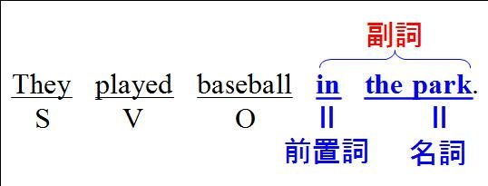
副詞というのはある動作を「どこで」するか、「いつ」するか、「どのように」するか、というようにその動作を説明するものをいう。
「公園で野球をする」という場合の「公園で」は「どこで野球をするか」の説明をしているから、副詞の働きをしている。
このようにthe parkだけだと名詞だが、その前に前置詞が置かれてin the parkとなると「副詞」の働きをするようになる。

このことは「前置詞」の箇所でも確認する内容だが、文法を理解するために不可欠の内容だから是非確実にマスターしておこう（厳密に言うと「前置詞+名詞」は形容詞の働きをすることもある。しかしこの問題をここで詳しく扱うと本題から外れるので、ここでは割愛する）。
このように「前置詞+名詞」は副詞の働きをするのだが、これは文の中では主語(S), 目的語(O)などの文の要素にはなっていないことにも注意しよう。
例えば「彼らは公園で野球をした」という英文で、「公園で(in the park)」はS, O, Cのいずれでもない。
このような副詞表現は文型を表現する場合にはM（修飾語Modifierの頭文字）で表記されることがある。
「副詞である」ということはこのように文の要素(S, O, Cなど）にはならない、というわけだ。これは「関係代名詞か関係副詞か」の判定に関わってくる問題である。
以上の内容を前提にして、「私は彼らが野球をした公園が好きだ」という英文を作るとしよう。
「彼らが野球をした」が「公園」を説明（限定）しているから、完成した英文の概略を示すと次のようになる。
I like the park （ ）they played baseball.
こういう形になったときに空所にどのような語が入るのだろうか。
上の内容の英文を作るには次の二つの英文を関係詞で結び付ければよい。
二つの英文は次のようになる。
① I like the park.
② They played baseball in the park.
①のthe parkと②のin the parkとは同じものを指している。ただしin the parkは前述のように副詞の働きをしている。
このように関係詞によって結び付けられる前の文で副詞の働きをしている場合には、関係代名詞ではなく関係副詞を使う。
ここでは「公園」は「場所」を表す語だから関係副詞としてはwhereを使う。これが先行詞the parkの後ろに来る。
そして残りの語句がwhereの後ろに続く。
ここまではin the parkが全体で「副詞」の働きをすることに着目し、それに相当する関係副詞(where)を使って文を結んできた。
しかしinthe parkのthe parkに注目すると、それはもちろん名詞である。そこでthe parkが名詞であることに着目すれば、関係代名詞を使って結び付けることもできる。これまで何度も行ってきたことだ。
I like the park.のthe parkとin the parkのthe parkは名詞として、同一物である。
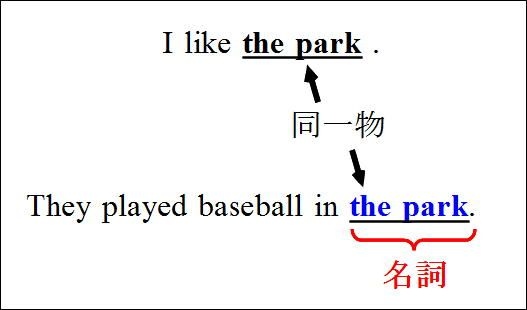
in the parkのthe parkは「前置詞の目的語」になっているから「目的格」である。だからthe parkを関係代名詞の目的格(which)に変えて、the parkに後ろに置く。
そして残った語句をwhichの後ろに続ける。ただしこの場合、最後のinも一緒に移動することに注意しよう。
そして文末の前置詞(in)は関係代名詞whichの前に移動できる（第11章で扱った「前置詞+関係代名詞」の形である）。
whereを使った文とin whichを使った文を並べてみよう。両方を見比べてみれば、where = in whichになることがわかる。
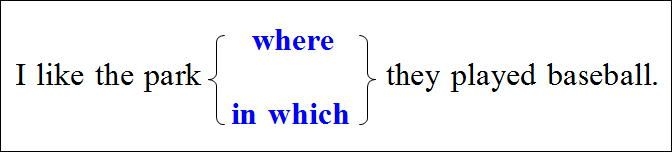
ここではwhere = in whichとなったが、whereだけでなく全ての関係副詞は「前置詞+関係代名詞」に書き換えることができる。
以下では実際の例文に当たりながら、空所に関係代名詞と関係副詞のどちらを入れるべきか、考えてみよう。
① I remember the house （ ） I was born.
(私は自分が生まれた家を覚えている）
② That's the house （ ） I built.
(あれは私が建てた家だ）（ジーニアス英和）
③ I like the house （ ） stands across the street.
(私は、通りを隔てた向かいの家が好きだ）
どれも「家(the house)」が先行詞になっているが、空所にはwhichとwhereのどちらが入るだろうか？
ポイントは関係詞を使って結び付ける前の「二つの英文を正確に把握する」ことだ。
上の①の例文
「私は自分が生まれた家を覚えている」は、
(a) I remember the house.
(私はその家を覚えている)
と
(b)I was bornin the house.
(私はその家の中で生まれた)
との二つの英文が結びついたものだ。
特に大切なのは、(b)でthe houseの前にinが来ることだ。「家の中で生まれた」の意味にならなければならない。だから「...の中で」の意味のinが必要になる。
この二つの英文を関係代名詞を使って結び付けてみよう。
二つのthe houseは同一物だから、後ろのthe houseがwhichになってthe houseの後ろに続く。
残った語句(I was born in)がwhichの後ろに続く。文末がinになっていることに注意。
文末のinがwhichの前に来る。
このようにして次の英文が完成する。
I remember the housein which I was born.
ところで「私はその家の中で生まれた」のI was born in the house.において、in the house (家の中で）は、「前置詞+名詞」の形をしていて「副詞」の働きをしている（ある動作が「どこで」されたかを説明するのは「副詞」である）。
だからこのin the houseは関係副詞に直すことができる。「家の中で」は場所を表すから関係副詞としてはwhereを使う。the houseとin the houseは「同じもの」を指すからin the houseをwhereに変えてthe houseの後ろに続ける。
残りの語句(I was born)をwhereの後ろに続ける。
こうして次の英文が完成する。
I remember the housewhere I was born.
同じ意味はin whichを使っても表現できる。
だから上の①の英文で
① I remember the house （ ） I was born.
(私は自分が生まれた家を覚えている）
空所に何が入るかといえば、whereである。
しかし次のように文末がinになっていたらどうだろうか？
I remember the house （ ） I was bornin.
この場合には空所にはwhichが入る。
今度は②の英文を見てみよう。
② That is the house （ ） I built.
関係詞によって結び付けられる前の二つの英文は次のようになる。
① That is the house.
(あれがその家だ）
② I built it.
(私はそれを建てた)
the houseとitは同一物だからitをwhichに変えてthe houseの後ろに置く。
残りの語句をwhichの後ろに置く。
こうして次の英文ができあがる。
This is the housewhich I built.
この英文ではこれ以上は変化させようがないからwhichのままである。
だからwhichの代わりにwhereを使った英文は誤りだ、ということになる。
This is the housewhere I built. (×)
関係代名詞を使うか関係副詞を使うかの判断は、上で述べたように関係詞で結び付ける前の二つの英文を考えるやり方の他に、関係詞以下の節に着目する方法もある。
whichを使った上の英文をもう一度確認してみよう。which以下の部分でIが主語(S)、builtが動詞(V)、whichが目的語(O)となっている。
関係代名詞、つまり（代）名詞を使うということは、それが目的語(O)や主語(S)など、文の要素になっているということだ（ここでは説明しないが補語(C)になることもある）。
これに対してwhereを使った英文の場合は、主語(S)、目的語(O)、補語(C)は他にありwhereはそのいずれにもなっていない。「私が生まれた家を覚えている」ではI was born (私は生まれた）でS+Vの文は完成している。whereはS, O, Cのいずれでもない。
whereは元の文でin the houseが姿を変えたものである。そして元の英文ではin the houseは副詞の働きをしている。
だからin the houseがwhereに姿を変えても、whereは修飾語(M)の働きをし、S, O, Cなど文の要素になることはないわけだ。
このように関係詞以下の文を見ることによっても、関係代名詞か関係副詞かの判定は可能である。空所に何が入るか、という判断だけの場合はこのような考え方の方が手っ取り早いかもしれない。
今度は③の英文を見てみよう。
③ I like the house （ ） stands across the street.
関係詞によって結び付けられる前の二つの英文は次の通りである。
(a) I likethe house.
(b)It stands across the street.
(a)のthe houseと(b)のItは同一物。Itは主語だから主格。従ってwhichに変えてthe houseの後ろに置く。
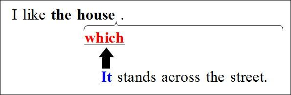
残りの語句はwhichの後ろに続ける。
こうして次の英文が完成する。
I like the housewhich stands across the street.
だから空所にはwhichが入ることになる（whereは入らない）。
上で述べた関係詞以下の部分に着目する方法で見てみよう。
図の点線で囲まれた部分に着目すると、主語(S)がないことに気付くだろう。だから空所に来る語が主語(S)にならなければならないわけだ（図中のMは修飾語Modifierを表す）。
だから空所には主語となるべきwhichが入る。
このように空所に何が入るかの分析だけなら、空所以下の部分で文の要素がどうなっているかに着目すれば結論は出せる。
次章ではwhere以外の関係詞についても、見ていくことにしよう。
第２０章関係副詞と関係代名詞(2)
前章で関係代名詞と関係副詞の使い分けに関して、考え方の基本を解説した。
この章ではこの問題により習熟するために、問題形式で空所に何が入るかを判断してみよう。
まずは「時を表す語」が使われている場合から。
【例①】空所にはwhen, whichのどちらが入るだろうか？
「私は彼が家を出た日以来、彼に一度も会っていない」
I have never seen him since the day （ ）he left home.
（選択肢）
which
when
【例①解説】
二つの英文を考えよう。前半部分は次のようになる。
① I have never seen him sincethe day.
(その日以来私は彼に一度も会っていない）
続いて後半部分。関係副詞は解答に直結するからしっかり考えよう。
② He left homeon the day.
（彼はその日に家を出た）
このように第二文でonが付くわけだから、このonが前に移動してon whichになり、whenになるわけだ。
文が完成する過程を確認してみよう。
二つのthe dayは同一物だから一方のthe dayがwhichになってthe dayの後ろに続く。
残りの語がwhichの後ろに来る。
こうして次の英文が完成するが、文末のonはwhichの前に移動できる。
だからwhichを使うのならwhich...onか、on whichとならなければならない。
他方「その日に(on the day)」という副詞表現に着目した場合は、関係副詞を使うことになる。「その日(the day)」は「時」を表す語だから使うべき関係副詞はwhenである。
whenの後ろにはhe left homeが続く。
だからon which = whenという関係になり、関係副詞は「前置詞+関係代名詞」と書き換えられる。これはwhereの場合と同じだ。
前章で紹介した空所以下の部分を分析するという方法も確認しておこう。
空所の後ろの部分ではheが主語(S)、leftが動詞(V)、homeが目的語(O)で、文の要素で不足しているものはない。
だから空所には副詞、つまり関係副詞が入ることになる。先行詞がthe dayつまり「時」を表す語だから空所にはwhenが入る。
【例①解答】
when
今度は日本語訳なしで考えてみよう。
【例②】
The boy didn't know there is a leap year, （ ）has 366 days, every four years.
（注）leap year：「うるう年」
（選択肢）
which
when
【例②解説】
二つの英文を考えると、前半は次のようになる。
① The boy didn't know there isa leap year every four years.
(その少年はうるう年が四年ごとにあることを知らなかった)
第二文は次のようになる。
②It has 366 days.
①のa leap yearと②のItとが同一物だからItがwhichに変わってa leap yearの後ろに続く。
残りの語句はwhichの後ろに続く。
このwhichは元の英文の主語Itが姿を変えたものだから主格である。
そしてその前に移動できる前置詞もない。
したがってこのwhichはこれ以上形を変えることはできない。
前章で紹介した空所以下を分析する方法を使うと次のようになる。
空所以下の部分では主語(S)がない。だから空所に入る語が主語にならなければならない。そのためには空所に入る語は名詞の働きをする語でなければならない。だから空所にはwhichが入る。
【例②解答】
which
完成した英文は次のようになる。
The boy didn't know there is a leap year,which has 366 days, every four years.
「その少年は、366日あるうるう年が四年ごとにあることを知らなかった」の意味。
「366日あるうるう年」の「366日ある(which has 366 days)」の部分は、うるう年の内容を説明するだけの働きをしていて、「限定」する働きはないから、コンマ(,)を前に置く非制限用法になっている。
続いては関係副詞whyに関連する問題。whyは先行詞がreason（理由）の時に使われる関係副詞だ。「理由」も人か物かと言われれば「物」だから、whichを使うこともある。
【例③】
Tell me the reason （ ）you were silent then.
（選択肢）
which
why
【例③解説】
「あなたがその時黙っていた理由を私に言ってください」の意味。
二つの英文に分けると、
① Tell me the reason.
(理由を私に言って下さい）
と
②You were silent thenfor the reason.
(その理由のためにあなたは黙っていた)
関係詞で二つの英文を結び付けるためには、①と②に「同じ語」がなければならない。だから②では前置詞のforを使う必要がある。このforは「...のために」「...のゆえに」の意味だ。reasonはこの意味のforと共に使われることは特に重要だ（入試に頻出）。
このforを使った熟語表現では
for no reason
（何の理由もなく）
for some reason
（（よくわからないが）何らかの理由で）
などはよく出題される。
要はreasonにはforを使うということは、大学入試という面からはとても重要だ。
②の英文でthe reasonの前にforが必要だとわかれば、話しは簡単だ。
二つのthe reasonは同一物だからwhichに変えてthe reasonの後ろに置く。
残りの語句をwhichの後ろに置く。
文末のforをwhichの前に移動する。
他方「for the reason（その理由のために）」は副詞表現であるから、関係副詞に書き換えられる。先行詞はthe reasonだから書き換えられる関係副詞はwhyである。
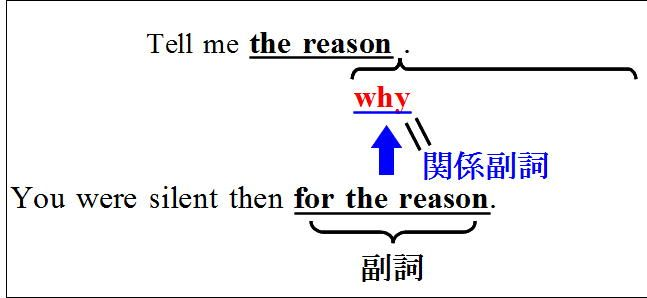
whyの後ろにyou were silent thenが続くのもこれまでと同じだ。
結局先行詞がthe reasonの場合もwhy = for whichとなり、「関係副詞＝前置詞+関係代名詞」の関係が成立する。
【例③】の英文は
Tell me the reason （ ）you were silent then.
となっていて、forがないから空所には関係副詞のwhyが入る。
空所以下の部分に着目する手法だと次のようになる。
空所の後ろの部分ではyouが主語(S)、wereが動詞(V)、silentが補語(C)で、文の要素で不足しているものはない(thenは「その時」の意味の副詞であるから修飾語(M)である）。
だから空所には副詞、つまり関係副詞が入る。先行詞がthe reasonだから空所にはwhyが入る。
【例③解答】
why
それでは次の例を考えてみよう。
【例④】
Bill told me that he had been ill. That is the reason （ ）he gave me.
（選択肢）
a. which
b. why
【例④解説】
「ビル私に自分は病気だったのだと言った。それが彼が私に告げた理由である」の意味。
二つの英文を示すと次のようになる。
① That is the reason.
（それが理由だ）
② He gave me the reason.
（彼は私にその理由を示した）
②のgave<giveは「（人）に（情報など）を告げる、述べる」の意味。
①のthe reasonと②のthe reasonは同一物だからwhichに変わりthe reasonの後ろに続く。
残りのhe gave meをwhichの後ろに続ける。
whichの前に持ってこられる前置詞はないから、whichはそのままだ。
【例④解答】
which
これまで見てきたように、関係副詞は「前置詞+関係代名詞」と同じ働きをする。
だから関係副詞を使うべきかどうかの判定に当たっては、関係詞によって結び付ける前の2つの英文を念頭に置いた上で、「前置詞を使うべきかどうか」をしっかりと把握することが是非とも必要である。
以上で関係副詞のwhere, when, whyの内容は理解出来ただろう。
残りはhowであるが、これは少し事情が複雑なので、章を改めて解説することにしよう。
第２１章関係副詞と関係代名詞(3)
関係副詞のhowは、これまで見てきたwhere, when, whyとは少し異なった事情がある。
「これが私がその問題を解いた方法です」の意味を表したい場合、次の2つの英文が出発点になる。
① This is the way.
(これがその方法です）
② I solved the problemin the way.
(私はその問題をその方法で解きました）
「その方法で」は前置詞のinを使ってin the wayという。「こういうやり方で」という熟語表現をin this wayというが、wayにはこのようにinを用いる。
①と②を関係代名詞で結び付けると、2つのthe wayは同じものを指すから後ろのthe wayをwhichに変えてthe wayの後ろに置く。
残りのI solved the problem inをwhichの後ろに続ける。
文末のinを前に移動すればthe way in whichという形ができあがる。
こうしてThis is the way in which I solved the problem.
という形ができあがる。
そしてin whichはhowに置き変えられる。ここまではこれまでと同じだ。
しかしここから少し事情が変わってくる。the way how S+V(×)という形にはならないのだ。
the wayまたはhowのどちらかを省略してthe way ( ) S+Vまたは( ) how S+Vのいずれかにする。
このことについては、「関係副詞と先行詞の省略」の問題と関連させて次章で詳しく見てみよう。
第２２章関係副詞と関係代名詞(4) 関係副詞と先行詞の省略
関係副詞は、以下に示すように先行詞となる語が大筋で決まっている。
例えば関係副詞のwhyがある時は、先行詞は常にthe reasonである。
他方the reasonがあれば、後ろにくる関係副詞はwhyしかない。
つまりthe reasonかwhyのどちらか一方があれば、他方はなくてもわかる、という関係が成り立つ。
だからわざわざthe reasonとwhyの両方を言わなければならないのは煩わしい、ということでどちらか一方を省略することができる。
ex. ① Tell methe reason ( ) you want to go to England.
（あなたがイギリスに行きたい理由を教えて下さい）←whyが省略
(注)上の例文のthe reason ( )は「( )の部分に省略があること」を示す。以下の記述も同じ。
② Tell me ( )why you want to go to England.←the reasonが省略
先行詞か関係副詞のどちらか一方を省略できるのは、whyだけではない。whenやwhereも同様である。
<when>
ex. My father died inthe year ( ) the war broke out.
(父は戦争が起きた年に死んだ）（ニューセンチュリー英和）←whenが省略
1950 is ( )when I was born.
(1950年は私が生まれた年です）←先行詞the yearが省略（プログレッシブ英和）
<where>
Is thatthe town ( ) he was born?
(それが彼の生まれた町ですか）←whereが省略（ニューアンカー英和）
This is ( )where the accident happened.
(ここが事故のあった場所だ）←the placeが省略（ニューセンチュリー英和）
特にhowはthe way how(×)とはせず、どちらか一方を必ず省略する。
ex. This is ( )how he did it.
(これが彼がそれをした方法です、こういうやり方で彼はそれをやりました）←the wayが省略（ニューアンカー英和）
I don't likethe way ( ) he talks.
(私は彼の話し方が好きではない）←howが省略（プログレッシブ和英）
the wayを使った表現については、前章でthe way in whichの形を確認した。このwhichは省略できない（「前置詞+関係代名詞」ではwhichは省略できない。このことは遠距離恋愛の比喩で第11章で解説した）。
結局、「...する方法」を意味する表現としては、次の三つがあることになる。
例えば「これが私がその問題を解いた方法です」を例に見てみよう。
最後に関係副詞の非制限用法を確認しておこう。
基本的に、制限用法・非制限用法の区別も関係代名詞と同じである。
ex. Come to see me in the afternoonwhen I am in the office.
(私が事務所にいる午後に訪ねてきなさい）（ニューアンカー英和）
Helen's father died of cancer in 1962,when she was only five.
(ヘレンの父はヘレンがわずか5歳だった1962年にガンで亡くなった）（新グローバル英和）
「私が事務所にいる午後」は、単なる「午後」の中からその条件に合うものだけに絞り込む（「制限する」あるいは「限定する」）働きをしているから、コンマ(,)を付けない制限用法を使う。
これに対して「ヘレンが5歳だった1962年」の「ヘレンが5歳だった」は1962年を絞り込むのではなく、単に説明しているだけであり、「ヘレンの父は1962年に死んだ、この時ヘレンはわずか5歳だった」というのと等しい。つまり関係副詞以下の語句は1962年を説明しているだけである。だからコンマ(,)を付ける非制限用法を使う。
第２３章関係副詞と関係代名詞(5)（問題演習）
関係副詞と関係代名詞に関しての問題を実際に入試問題で確認してみよう。これはかなり難しい問題まで出題されるから注意が必要だ。
【第５巻 確認問題８】
She lives in Wakayama,（ ）is 50 kilometers from here.
（選択肢）
a. there
b. where
c. when
d. which（大阪電通大）
【第５巻 確認問題８解説】
英文の意味は「彼女は和歌山に住んでいて、ここから50キロだ」という内容。
関係詞で結び付ける前の2つの英文を考えると次のようになる。
① She lives in Wakayama.
② Wakayama is 50 kilometers from here.
(和歌山はここから50キロだ）
②のWakayamaは文の中では主語だから主格のwhichに変えて①のWakayama, の後ろに続ける。
She lives in Wakayama,which is 50 kilometers from here.
「和歌山(Wakayama)」は場所を表す語だが、ここではwhereを使わない。
完成した英文の意味は次の通り。
「彼女はここから50キロ離れた和歌山に住んでいる」
【解答】
d. (which)
【第５巻 確認問題９】
"Are you going somewhere during the vacation?"
"Yes, I've found a nice beach（ ）I can enjoy swimming even in February."
（選択肢）
a. how
b. when
c. where
d. which （センター試験）
【第５巻 確認問題９解説】
問題文の意味は次の通り。
「休暇中にあなたはどこかに行く予定ですか？」
「ええ、二月でも泳ぎを楽しめるステキなビーチを見つけたんですよ」
関係詞を結び付ける前の2つの英文を考える。
①I've found a nicebeach.
②I can enjoy swimmingin the beach even in February.
①のbeachと②のthe beachは同一物だからwhichになり、inがその前に来る。
I've found a nice beachin which I can enjoy swimming even in February.
そしてこのin whichがwhereに変わったのが問題文である。
【解答】
c. (where)
【第５巻 確認問題１０】
A: Why do you skip lunch every day?
B: That's （ ）I lose weight.
（選択肢）
a. how
b. way
c. when
d. where （東北学院大）
【第５巻 確認問題１０解説】
「どうして毎日昼食をたべないの？」「そうやって体重を減らしてるの」の意味。
That isthe way in which I lose weight.
(それが私が体重を減らす方法だ）
ということ。本文はthe wayが省略された形である。
That's ( ) how I lose weight.
ということ。
【解答】
a. (how)
【第５巻 確認問題１１】
My clock was broken. That's（ ）I was late for school this morning.
（選択肢）
a. because
b. maybe
c. when
d. why （京都産業大）
【第５巻 確認問題１１解説】
「時計が壊れた。それで私は今朝学校に遅刻した」の意味。時計が壊れたことが、「遅刻の理由」だったわけだから、次の三つのセンテンスを念頭に置けばよい。
① My clock was broken.
（時計が壊れた）
② That is thereason.
（それが理由だ）
③ I was late for school this morningfor the reason.
(その理由のために、私は今朝遅刻した）
②と③の英文を関係詞で結ぶと次のようになる。
That isthe reason for which I was late for school this morning.
（それが私が今朝学校に遅刻した理由だ）
for whichの代わりにwhyを使うと次のようになる。
That isthe reason why I was late for school this morning.
そして先行詞のthe reasonを省略した形が問題文の形である。
That's ( ) why I was late for school this morning. ←the reasonを省略。
【解答】
d. (why)
次の問題は難しい。
【第５巻 確認問題１２】
The part of the story I enjoyed most was（ ）the hero decided to revenge himself on his enemy.
（選択肢）
a. which
b. in which
c. what
d. where（同志社大）
【第５巻 確認問題１２解説】
「私がその話の最も楽しかったところは、主人公が敵に復讐を決心した場面だ」の意味。
The part of the story (that) I enjoyed mostは「その話で私が最も楽しんだ部分」の意味。storyの後ろに関係代名詞（目的格）のthat [which]が省略されている。
これが主語(S)だからこの部分をSで略記すると、問題文は次の二つの英文が出発点である。
① S wasthe scene.
(Sがその場面だ）
② The hero decided to revenge himself on his enemyin the scene.
(主人公はその場面で敵への復讐を決断した）
（注）問題文は劇の話しをしているが、劇の中のある「場所」ということで、ここではthe scene（場面）という語を使った。
そして①②を関係副詞を使って結び付けると次のようになる。
S wasthe scene where the hero decided to revenge himself on his enemy.
更に関係副詞whereの先行詞the sceneが省略されたものが問題文である。
つまり、
S was ( ) where the hero decided to...
ということ。
【解答】
d. (where)
第２４章thatを使うべき場合
thatは関係代名詞の働きをすることがある。
先行詞が物の時も人の時も使える。
主格-所有格-目的格は「that-×-that」である。
thatは先行詞が物か人かの区別なく使えるから便利そうだ。しかし文法書を読むと、細かい規則が色々書かれている。
その内容を参考書や問題集で勉強されたことのある方なら、うんざりされてしまった方も多いだろう。
「どうしてそうなるのか」を全く指摘することなく結果だけ記されているから、他の用法と混乱しやすく忘れやすい。それになんと言っても退屈だ、と感じた人も多いのではないだろうか。
そこで極力丸暗記しなくて済むよう、可能な限り理由を明示しながら解説しよう。
（１）thatを使わなければならない場合
①先行詞が「物＋人」の場合。
ex.The men andequipmentthat had been loaded on the truck were driven to the construction site.
(トラックに積み込まれた人間と機材は建築現場へ運ばれていった）（研究社・英和中）
人と物に共通するのはthatしかないから、thatを使うということだ。
②先行詞がwhoの場合。
Who that has common sense can believe this?
（常識のある誰がこれを信じられるだろうか[いや、信じられない])
これは日本語の反語に相当する表現で、英語では修辞疑問という。
先行詞がwhoつまり人だが、関係代名詞にwhoを使うとwho whoとなってしまうからそれを避けるためにthatを使うわけだ。
（２）「コンマ(,)+that」「前置詞+that」の形では使えない
thatの前には前置詞やコンマ(,)を置くことはできない。
関係代名詞の前に来るのは、前置詞とコンマ(,)しかない。だから、「thatの前にものを置いてはいけない」と整理してもよいだろう。
関係代名詞thatに関して暗記しなければならないのは、これだけだ。
以下では、他の文法書に載っている、これ以外の細かい規則について見ていこう。
（Ａ）「all, any, every, the only, the very, noなどの形容詞や最上級の形容詞、序数詞(first, secondなど）を使う場合はthatを使った方がよい」という規則はほとんど全ての文法書に載っている。
そして高校生・受験生の多くはこれを暗記している。
しかし、試験ではこれはほぼ100％の確率で出題されない。
出題しようと思ってもできないのだ。
まず上の規則の文言に注意してもらいたい。これこれの場合にはthatを使った方がよいとしている。「thatだけが正解だ」とは言っていない。
言い変えると「thatの方がベターだけど、whoやwhichでもいいよ」と言っているわけだ。そういう場合はテストでは出題できない。whoやwhichを使った人を減点できないからだ。
テストというのは、正解した人には加点し、不正解の人には減点するというシステムだ。だから正解は一つでなければならない。選択肢のどちらを選んでも正解ということなら、テストにならないわけだ。
実際の英文でも上のような場合にthatを使わないケースは多いそうだ。
この点に関してジーニアス英和大は、上で述べた語が使われている場合には
「thatを用いる方がよいとされる。しかし現実には物・ことにはwhich、人にはwho, whomが用いられることが多い」と記されている。
だから「all, any...の場合にはthatを使う」という規則は、覚える必要はない。
この規則は試験ではほぼ100％出題されないのにどの本にも載っている、私に言わせれば「不可解な規則」だ。
(A)の規則は、試験ではほぼ確実に出題されない「無意味な規則」だが、次の規則は大切だ。
(B)thatが関係詞節の中で主格補語になる場合には先行詞が人でもwhoを使えない。
ex. I am not the manthat I was.
(私はもう昔の私ではない）（新グローバル英和that)
「主格補語」というのはS+V+Cの文型でC（補語）をそのように呼ぶ。
上のケースでは先行詞がthe manつまり「人」なのに、whoは使えない。
この規則は、英語がどういうものかを理解していないと、完全に丸暗記しなければならないやっかいな規則だ。
しかしこれは暗記すべきことがらではないのだ。「理解」すべきことなのだ。これについて以下で詳しく見ていくことにしよう。
第２５章「物」と扱われる人(1)
特殊な関係代名詞の用法
関係代名詞には前文の内容を先行詞とする用法がある。
① She changed her mind again,which made us all angry.
(彼女はまだ気が変わり、それで私たちは皆腹を立てた）（プロシード英和）
このwhichは「また彼女の気が変わったこと(She changed her mind again)」を指している（先行詞としている）。

そしてそのこと(=which)が私たち皆を怒らせた(made us all angry)、というのが文全体の意味である(make us all angryは「make+O+C」（OをCの状態にする）の構文）。whichのこの用法は、whichの前にコンマ(,)を置く。つまり非制限用法である。
「前文の内容」というのは、厳密に考えると「物」とは言いがたいわけだが、「物か人か」と言われれば「物」と言って良いだろう。少なくとも「人」でないことは明白だ。
だからこの場合whoやwhomは使えない。
また前にコンマ(,)をつける用法だからthatも使えない。
上の例文①は前文の内容を先行詞としているが、その一部を先行詞にする場合もある。
② I tried to solve a math problem,which was found to be impossible.
（私は数学の問題を解こうとしたが、不可能だとわかった）（ジーニアス英和大）
このwhichは「数学の問題を解くこと(to solve a math problem)」を指している（先行詞としている）。
つまり「前文の一部」を先行詞にしているわけだ。前文の「一部」も「物」というわけだ。
「前文の一部」の中でも特に、前文中の形容詞だけを先行詞にすることがある。
③ They thought him dull,which he was not.
（彼等は彼のことを馬鹿だと思っていたがそうではなかった）(ランダムハウス英語辞典）
この例文ではwhichの先行詞はdullである。
だから上の例文は次のように書き変えられる。
They thought him dull,but he wasn't(dull).
このように「前文」も「前文の一部」も、そして更に前文の一部である「形容詞」も「物」と扱われて関係代名詞としてwhichが使われるわけだ。
話しを進める前に、上の例文のthought him dullの部分に関しては、ちょっと解説を加えておこう。
thinkはthink A (to be) Cの形を取って「AをCであると考える」の意味を表す。同じ意味はthat節を使ってthink (that) S+Vの形でも表現できる。
つまり
They thought him (to be) dull.
= They thought (that) he was dull.
ということだ(that節を使う場合は時制の一致の関係でwasになる）。
ここでhe was dullのdullは文型で言えばS+V+Cであり、dullは「補語(C)」である（このように「イコール（＝）の関係」が成立するものを「補語(C)」と呼ぶ）。
他方thought him (to be) dullの場合も、he is dullの関係、つまり「イコールの関係」が成立するからdullは補語(C)である。この場合はhimが「目的語(O)」になるから全体ではS+V+O+Cの文型である。
そして補語(C)の位置に来るのはdull（バカな）のような形容詞だけでなく、名詞が来ることもある。
だから上の英文は次のように書き変えてもほとんど同じ意味になる。
They thought him a dull man.
(彼らは彼をバカな男だと思った）
この構文ではmanを使っているが、manを付けなくても大体似たような意味を表す。
つまり
They thought hima dull man.
≒ They thought himdull.
ということだ。
さあ、ここからがいよいよ本番だ。
次の二つの例文で空所にはどのような語を入れるべきだろうか？
(A) They thought himdull,（ ）he was not.
(B) They thought hima dull man,（ ）he was not.
どちらの文も大体同じような内容だ。
manという語と不定冠詞aがあるか・ないかの違いだけだ。
全体では「彼らは彼をバカ（な男）だと思ったが、そうではなかった」という意味だ。
そのことを前提にして空所にはどのような語が入るかを考えてみよう。
(A)では先行詞がdullという形容詞だから、空所にはwhichが入る。
They thought him dull,which he was not.
whichには前文の形容詞dullを先行詞とする用法であり、それを用いるべき場合である。
問題となるのは(B)の場合だ。
(B) They thought him a dullman,（ ） he was not.
「彼らは彼を愚かな男だと思ったが、彼はそうではなかった」という意味だ。
この場合空所にはどのような語を入れるべきだろうか。
結論を示すと、この場合もやはりwhichを用いる。
(B) They thought hera dull man,which he was not.
あなたはこのような結論を奇異に感じるだろうか、それとも素直に納得するだろうか？
形の上では先行詞はa dull manであり、これはもちろん「人」である。それなのに関係代名詞としてはwhichが使われるわけだ（whoやwhomは使えない。thatについては、前にコンマ(,)があるからこれも使えない）。
「先行詞が人なのにwhichを使う」という事実に、あなたは少し衝撃を受けるかもしれない。英文法の問題集を読んでいると、それを書いている先生方の中にも、この事実を十分に把握されていない方が何人かいらっしゃるようだ。それくらいこれは難しいテーマだ。
英米人はmanを使う(B)の場合と、
それを使わない(A)の場合
とではどちらもwhichを使う。どちらも同一に扱うわけだ。
それはどういう考えに基づくのだろうか。
ここで問題としたい内容は「退屈(dull)だ」ということなのであって、それが「男(man)かどうか」ということは重要ではないのだ。
「彼(he)」という語を使っているのだから、「男(man)」であることは明らかだとさえ言える場合だ。
「退屈」か「そうでないか」をこのセンテンスは問題としていて、それが重要なテーマである。彼が「男」であることは明白であり、そんなことはheを使った時点でわかりきっている。だから「男(man)」という語は大して重要な意味をもたない（あってもなくても結論は変わらない）というわけだ。
いわば「男」は「金魚のフン」のようなものでしかないわけだ。
英語ではこの「退屈だ」のように、その人の「性格」を問題としていてそれが「補語」になる場合には、それがたとえ名詞を表していてもwhichを使う(whoは使えない）。
「性格」と「補語」がキーワードである。
「補語(C)」であるかどうかの判定は、which以下の部分で考える。この場合はheがS, wasがV, whichがCで全体ではS+V+Cの文型になっている。
関係代名詞のこういう用法はちょっと難しいから、更に実際の例でもう少し詳しく見てみよう。「性格」と「補語」に注意が必要だが、次の例文のように「性格」の他に「職業」を問題とする場合もある。
(C-1) His mother wasan able lawyer,which he is not.
(彼の母は有能な弁護士だったが、彼はそうではない）（ロイヤル英文法）
「有能な弁護士」という「性格」あるいは「職業」が問題になっていること、which以下のセンテンスではwhichが補語(C)になっていることをまず確認しておこう。
先行詞は「有能な弁護士(able lawyer)」である、つまり「人」である。それなのにwhichが使われている（whoやwhomは使えない。thatは前にコンマ(,)があるから使えない）。
ここでは母と彼とを比べて「有能（able)かどうか」が問題となっている。
だから上の例文は、「母は有能だったが、彼はそうではない」ということで、
(C-2) His mother wasable, which he is not.
としても大体同じような意味だ。
ただ、(C-2)のようにlawyer（弁護士）という語がないと、彼や彼の母がどういう仕事をしていたのかが相手に伝わらない。だからその点を文章で表現したいために、lawyerを入れているだけだ。
話しの中心は「有能かどうか」なのだから、後ろに来るlawyerは、いわば「金魚のフン」でしかないというわけだ。だからlawyerという語があってもなくても結論には変わりはない（どちらもwhichを使う）、というわけだ。
ここまでは先行詞の後ろにコンマ(,)を置く用法（非制限用法）を見てきた。しかしコンマ(,)を置かない非制限用法でも同じである。以下の例文でも「性格・職業」と「補語(C)」に注意して見てみよう。
(D) Sue is the efficient secretarywhich her predecessor was not.
(スーは前任者と違って有能な秘書である）（ウィズダム英和）
ここでも「有能な秘書」という「性格・職業」が問題になっているし、which以下のセンテンスではwhichが補語(C)になっている。
だからこの場合はwhichが使われているが、thatを使うことも可能である(thatの前にコンマ（、）がないから）。
関係代名詞のthatは「コンマ(,) that」の形では使えないから、非制限用法の(B)や(C-1)ではthatを使えないが、制限用法の場合はthatも使えるわけだ。
理屈の上からはこのような場合にwhichを使うのが本筋なのだが、先行詞が人なのにwhichを使うことに、英米人も少し違和感を覚えることが多いようだ。おそらくそのためだろうと思われるのだが、上の(D)のようなケースではwhichの代わりにthatを使うことが多い。
ex. He's not the haughty manthat he was five years ago.
(彼は五年前の尊大な男ではない）（ニューセンチュリー英和）
この例文でも「尊大(haughty)」かどうかが主題なのであって、彼が男(man)なのは、わかりきった話しだ。このように「性格・職業」を問題とする場合には、「物」と扱ってthatやwhichを使うというわけだ（whoやwhomは使えない）。
この問題は少し難しいが、私は概要を次のように理解している。
My father is an able doctor,which I want to be.
(私の父は有能な医者で、私も医者になりたいと思っています）
という例文で考えてみよう。
有能な医者とそうでない人を比べると、有能な医者には
「優れた医学的な知識＋白衣＋聴診器」
が備わっている。
単なる「人」との違いは極論すればこの三つだ（決してお医者様を侮辱しているわけではありません）。
この「すぐれた医者としての知識」と「白衣」と「聴診器」は全て「物」だ。
だから「医者である」という属性自体は「物」なのだ。
＜発展学習＞
「性格・職業」を問題として「補語」になる場合には、人であっても「物」として扱いwhoやwhomを使わず、whichやthatを使う。
このような現象はどうして起こるのか。その「本質的な理由」を考えてみよう。
ちょっと難しい内容になるから、興味のある方のみお読み下さい。
まずwhoを使う場合と、whichを使う二つの場合を比べてみよう。
どれも先行詞がteacherであるが、第一の例文はwhoを使っているが、第二の例文ではwhichが使われている。
(A) I want to be a teacherwho is trusted by the students.
（私は生徒から信頼される先生でありたい）（研究社 新和英大）
(B) His mother was an able teacher,which he is.
(彼の母は有能な教師だったが、彼もそうだ）
(B)のケースは、「性格・職業」を問題としていてwhich以下のセンテンスでwhichが補語(C)になっているから、「物」と扱われてwhichが使われている。
関係代名詞を使った文は、二つの英文を結び付けることによってできる。例えば、(A)は
I want to bea teacher.
He is trusted by the students.
そしてa teacher = HeだからHeがwhoになってa teacherの後ろに来る。
だからwhoはa teacherと同一人物である。
絵で示すと、a teacherとwhoは同一人物である。
このように「人」を先行詞とし、whoを使う場合は「先行詞」(ここではteacher)と関係代名詞（ここではwho)とが同一人物である。
これに対して、whichを使ったケースではどうだろうか。
(B) His mother was an able teacher,which he is.
(彼の母は有能な教師だったが、かれもそうだ）
これは、
His mother wasan able teacher.
と
He isan able teacher.
との二つの英文が起源となって関係代名詞で結び付けられたものだ。しかしan able teacherとwhichは「別人」だ。
見かけ上は「人」が先行詞のようになっているが、その「性質」が同じかどうかを問題にしていて、同じなのは有能な教師であるという「性格・職業」なのであって、「人」それ自体は同一人物ではない。
つまり先行詞は「有能な先生である」という内容あるいは事実なのであって、「人そのもの」ではないのである。これがwhoではなくwhichが使われる本質的な理由である。
第２６章「物」と扱われる人(2)
前章では先行詞が「人」であっても、それが「性格・職業」を問題にしていて「補語」になる時には「物」として扱われることを見てきた。
ここではそれを使った慣用表現を見てみよう。
学習の進んだ人なら次の表現をご存じの筈だ。
what he was（昔の彼）
これは例えば次のように使う。
He is notwhat he was.
(彼は昔の彼ではない）
のように使う。
この表現はほとんどの文法書では「慣用表現」として扱われている。
だが「昔の彼」は「人」であるのに、なぜwhatを使うのだろうか。「人」を表すのならwhoやwhomを使うのが筋だ。
慣用表現だと言われれば、「決まった言い方なのだから、つべこべ言わずに丸暗記しろ」と言われているようなものだ。
しかし「その慣用表現はなぜ生まれたのか」を考えてみよう、それは結構楽しいし、またそうすれば暗記も楽になる、というのが本書の基本的なスタンスだ。だからここでもそれを考えてみよう。
まずwhatの用法から確認していこう。
whatは例えば次のように使う。
What is most important in life isn't money.
(人生でもっとも重要な物はお金ではない)
この場合のwhatはthe thing which [that]に書き変えられる。
このことは、これまでに何度も確認した内容だ。
だから「昔の彼」をwhat he wasで表すということは、同じ内容を表現すると
the thing which [that] he was
になる、ということだ（以下の記述ではwhichの他にthatを表記するのは煩わしいので、whichだけを使う）。
「彼は昔の彼ではない」というのも、
He is notthe thing which he was.
が元々の形だ、ということになる。「彼(he)」はもちろん「人」なのにthe thingやwhichを使うわけだ。
一見すると変な現象だが、前章までの内容を理解していればこうなることも納得できるだろう。
「性格・職業」が問題となっていて、whichが「補語」になっている場合そのものなのだ。
＜発展学習＞
このように「人」に関する表現なのに「物」を使う表現としては他にanything butという表現もある。
これは学習が進んでいる人はきっと一度は耳にしたことがあるはずだ。「...では全くない」の意味を表す。
「notを使わない慣用表現」として副詞の箇所で「慣用表現」として扱われることが多い。
これは例えば次のように使われる。
ex. He isanything but a poet.
(彼は詩人なんかでは決してない）
どうして「...では全くない」の意味になるのかは後述するとして、この表現では主語が「人」なのに、anythingが使われている。「人」であるならanyoneとかanybodyを使うべきなのに、anythingとなっているわけだ。
これも人の「性格・職業」を問題としていて「補語」になる場合は「物」と扱う、という根本原理を理解してあれば、スムーズに頭の中に入ってくるのではないだろうか。
次章では更にこの問題に関連する慣用表現を見てみることにしよう。
第２７章「物」と扱われる人(3)（慣用表現）
「物」と扱われる人、に関連する慣用表現としては、「いわゆる」の意味の次の表現がある。
what we call X
= what is called X
どちらも「いわゆるX」の意味を表す。
what we call Xではweの他にyou, theyなど状況に応じて様々な語が来る。
まず「いわゆる」という日本語の意味から確認しておこう。日本語のこの意味を良く理解していない人がとても多い。
これは「世間一般でそう言われている」という意味で、例えば次のように使われる。
She is on a diet now, so she is unlikely to eatwhat we call "junk food."
(彼女はいまダイエット中だ、だからいわゆるジャンク・フードは食べそうもない）
この文の「いわゆるジャンク・フード」というのはどういうことなのだろうか。
ポテトチップやファストフードのように、脂肪・糖分・塩分が多くて体に良くない食品は「ジャンク・フード」と呼ばれることがある（「ジャンク」は「がらくた」の意味）。メーカーから言わせれば、自分たちの作っている商品が「がらくた」だなんてことは絶対に認めないはずだ。だからメーカーの側から「これはジャンク・フードです」と言うことはないし、彼らがそう呼ぶことはない。
そのように呼んでいるのは消費者である私たちだ。
だから「私たちがジャンク・フードと呼んでいる物」ということで「いわゆるジャンク・フード」という言い方になるわけだ。
訳語の意味が理解出来たところで、what we call Xの形がどのようにできたかを確認しておこう。
基本は次の二つの英文である(上の例文の前半部分は省略する）。
① She is unlikely to eat the things.
(彼女はその物を食べそうにない）
② We call them "junk food."
(私たちはそれらを「ジャンク・フード」と呼ぶ）
この②のセンテンスはWeが主語(S)、callが動詞(V)、themが目的語(O)、"junk food"が補語(C)のS+V+O+Cの文型である。そしてthe things = themである。
themは目的語だからwhichになってthe thingsの後ろに移動する。
そして残りのwe callと"junk food."をwhichの後ろに続ける
最後にthe things whichをwhatに置き変える。
こうしてwhat we call Xという形ができあがる。
これに対してwhat is called Xは、受け身の形が出発点になっている。
We call them "junk food."
は受動態にすると
They are called "junk food."
となる。
そしてThey（主格）がwhichに変わり、are called "junk food."がその後ろに続く。
このようにしてできたのがwhat is called Xという言い方である。
ところで「いわゆる」という表現と混同しやすいものに「いわば(as it were, so to speak)」がある。多くの人は「いわゆる」と「いわば」の区別がしっかりできていないようだ。
「いわば」は「言う」の未然形（「言わ」）に助詞の「ば」が付いたもので、「言ってみれば」「たとえて言うなら」の意味である。耳新しい表現であるからちょっと気が引けるような場合に、「クッション」の働きを持たせるために挿入的に使われる。
ex. They indulge their only son. He is,as it were, their King.
（彼らは一人息子を甘やかしている。子供はいわば彼らの王様だ）
これに対して「いわゆる」は「世間の人がそう呼んでいる」の意味である。
ex. Have they clarified the cause ofwhat is called mad cow disease?
(いわゆる狂牛病の原因は解明されましたか？）
「狂牛病」という表現は、正式名称は「ウシ海綿状脳症BSE」だそうだ。だが庶民にはそういう難しい言葉はわかりにくい。だから分かり易い「狂牛病」という言葉を使う。「狂牛病と呼ばれているもの」→「いわゆる狂牛病」ということだ。
第２８章「物」と扱われる人(4)
A is to B what C is to Dで「AとBとの関係はCとDとの関係と同じだ」の意味になる。
これも私が学生の頃は、理屈もなしに丸暗記させられた表現だ。
しかしこれもwhatの用法に忠実な表現だ。
まずこの表現を使った英文を見てみることにしよう。
ex. The earthis to the sunwhat the moonis to the earth.（地球と太陽の関係は月と地球の関係と同じである）（ニューアンカー和英）
地球は太陽の周りを回っているが、それと同じように月も地球の周りを回っている。
このようにある天体の周りを回るものを惑星(planet)とか衛星（satellite)という。厳密には地球は惑星(planet)だが、月は衛星(satellite)である。
だが、惑星・衛星を厳密に区別することは本書の目的からは外れる。だから別のある天体の周りを回っている天体を
の印で表記することにしよう（以下本文の解説は「☆」で表す）。
つまり地球は太陽に対して、また月は地球に対して次のように書き表すことができる。
ここでのtoは「...に対しては、...にとっては」の意味だ。例えば、
He is kindto me.
(彼は私には優しい）
のtoと同じ用法である。
ただしここでの表現を考えるにあたっては、to the sunが次のように前に移動した形を考える必要がある。
つまりThe moon is to the earth☆.
という構文を考えよう。
to the sun(地球に対して）は副詞句で、副詞句は文の中で比較的自由な位置を取ることができる。だからこの位置に来ることができる。
他方、月も地球を回っているから地球に対しては「惑星」である。だから上と同じような形の文を作ることができる。
The moon is to the earth☆.
こうして二つのセンテンスができあがるのだが、二つの☆は同じ種類のものだ。だから一方を関係代名詞whichに変え先行詞（☆）の後ろに置くことができる。
そして残ったThe moon is to the earthをwhichの後ろに移動する。
すると次の文が完成する。

そしてこの文で☆ whichをwhatに変えた形がここでの表現である。
関係代名詞whatはthe thing(s) whichと同じだから、「☆+which」と書き換えられるわけだ。
こうしてできたのが次の英文だ。
The earth is to the sun what the moon is to the earth.
ただその和訳を直訳の形、つまり「...する先行詞」の形で示すのはほとんど不可能だ。
だから意訳で示すと次のようになる。
「地球は太陽に対しては☆であり、月も地球に対してはそれと同じもの[☆]である」ということから、「地球と太陽との関係は、月と地球との関係と同じである」ということになるわけだ。
A is to B what C is to Dの構文はこのようにしてできたものだ。
原理が理解出来たら、この構文ができた過程を友人などに説明してみてはいかがだろうか。
きっと理解が更に深まることだろう。
第２９章「物」と扱われる人(5)（問題演習）
ここまでの内容を問題演習で確認してみよう。
【第５巻 確認問題１３】
There are few places downtown for parking,（ ）is really a problem.
（選択肢）
a. what
b. where
c. which
d. who（センター試験）
【第５巻 確認問題1３解説】
「繁華街にはほとんど駐車場がないが、これは本当に問題だ」の意味。
全文の内容を先行詞にする用法で、whichを使う。
whichには全文の内容を先行詞にする場合がある。ここでは「繁華街にはほとんど駐車場がないこと(There are few places downtown for parking)」を先行詞にしている。
【解答】
c. (which)
【第５巻 確認問題１４】
He is not the man（ ）he was when I first knew him. (梅花女子大・改）
（選択肢）
a. that
b. what
c. who
d. whom
【第５巻 確認問題1４解説】
「彼は私が始めて彼を知った時の男ではない」の意味。
この問題では
He is notwhat he was.
(彼は昔の彼ではない）
という表現があり、それからの類推で空所にwhatを入れる人が多い。
しかし本問で空所にwhatを入れて、
He is not the manwhat he was. (×)
としてはならない。
この点を以下では再確認しておこう。
問題文は次の英文を関係代名詞で結んだものである。
① He is notthe man.
(彼は「その男」ではない）
② He wasthe man when I first knew him.
（私が始めて彼を知った時、かれは「その男」だった）
そしてthe manが同一人物だから後ろのthe manが関係代名詞(that)に変わって、the manの後ろに続く。
そして残りのHe wasと、when I first knew himをthatの後ろに続ける。
こうして次の文ができあがる。
He is not the manthat he was when I first knew him.
だからこの問題では空所にthatを入れなければならない。
それではwhatを使う場合はどのような形になるのだろうか。
what=the thing(s) whichであり、whatは「先行詞+that」と同じ働きをする。
だからthe man thatはwhatに置き換えられる。
だからwhatを使うのなら次のようになる。
He is notwhat he was when I first knew him.（○）
なおこの問題では空所にthatが入るが、選択肢にwhichがあればwhichも可能である。しかしwhoやwhomは不可。
これについては、「『物』と扱われる人（１）」で指摘した次の英文を思い出そう。
Sue is the efficient secretarywhich her predecessor was not.
(スーは前任者と違って有能な秘書である）（ウィズダム英和）
【解答】
a. (that)
【第５巻 確認問題１５】
She looked like a doctor,（ ）she wasn't.
（選択肢）
a. that
b. what
c. which
d. who（武庫川女大）
【第５巻 確認問題1５解説】
「彼女は医者のように見えたが、そうではなかった」の意味。
「性格・職業」を表して、関係代名詞が補語になる場合は「物」として扱われるからwhichを使う。
関係代名詞のthatは、前にコンマ(,)がある時には使えないから、ここでは不可。
【解答】
c. (which)
【第５巻 確認問題１６】
He is（ ）is called a diligent student.
（選択肢）
a. what
b. who
c. that
d. which （東海大）
【第５巻 確認問題1６解説】
「いわゆる」の意味のwhat is called Xを使う。
「彼はいわゆる勤勉な学生だ」の意味。
【解答】
a. (what)
【第５巻 確認問題１７】
空所に適語を入れよ。
It is often said that rice is to Asians（ ）wheat is to Europeans.
（選択肢）
a. how
b. that
c. what
d. which（センター試験）
【第５巻 確認問題1７解説】
「米とアジア人の関係は、小麦とヨーロッパ人の関係と同じだ、としばしば言われる」の意味。
A is to B what C is to D（AとBの関係はCとDの関係と同じである）
の構文を使う。
【解答】
c. (what)
第３０章二重限定と挿入(1)
関係代名詞の直後にS+Vが挿入されることがある。これを「関係詞直後の挿入」という。
例えば次のような形だ。
ex. I received a letter from a manwho I thought was my enemy.
(敵だと思っている人から手紙をもらった)
この用法はI received a letter from a manwho was my enemy.
(私の敵である人から手紙をもらった)
という文のwhoの後ろにI thoughtが挿入された形である。
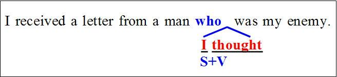
そのため「関係代名詞直後の挿入」と呼ばれることが多いが、「連鎖関係代名詞節」なんていう難しい用語を使って説明する書物もある。
ここではわかりやすさの観点から「関係代名詞直後の挿入」と呼ぶことにしよう。
この表現の形は、後に詳しく見るように、関係代名詞を使ったセンテンスの作り方の原則に基づいた、極めて当然のシンプルな表現に過ぎない。だから「連鎖関係代名詞節」なんていう難しい用語を使うのは、ちょっと気恥ずかしい感じがするのだ。
この表現は上の図で示したように、関係代名詞の直後にI thoughtなどのS+Vが挿入された形である、と説明されることが多い。
ここではI thoughtが挿入されているが、挿入される動詞はthought(think)以外にも色々ある。
文法の参考書によれば、
hear, think, believe, fear, fancy, find, know, rememberなどがあるそうだ。
色々とたくさんの動詞を列挙したが、例によってこれらを「覚えてくれ」という趣旨では全くない。そういう機械的な暗記は退屈なだけだ。そうではなく、「どうしてこういう表現が生まれたか」という問題を見てみよう。
これを解決すれば、上に述べた問題つまり
「関係代名詞の後ろに挿入される動詞は、thinkの他にどのようなものがあるか」
という問題に必然的に解答が見つかる（つまり「覚えなくてよい」）からだ。
では、「関係代名詞直後の挿入」という表現はどのようにして生まれたのかを見てみよう。
上の英文は次の二つの英文を関係代名詞を使って結びつけたものである。
つまり関係代名詞によって結びつけられる前の二つの英文を考えると、that節が後ろに続く場合に「関係代名詞直後の挿入」という現象が起きる(ただしthatは普通省略する）。
だから、that節を従えるような語句であれば、think以外にも色々な語が続く。上に列挙したhear, think, believe, fear...などはどれも後ろにthat節を従える動詞である。
それではthat節が続く場合はなぜ「関係代名詞直後の挿入」という現象が起こるのだろうか。
ここでは英米人がなぜこのような形を使うようになったのか、その本質を考えてみよう。
実はこの問題は、関係代名詞の最初の部分から何度も指摘してきた「関係代名詞を使った英文の作り方」の基礎に忠実に従った、ごくごく当たり前の「普通の表現」でしかないのである。
関係代名詞の冒頭で、「関係詞を使った英文はどのように作るか」を解説した。その内容を思い出してもらいたい。
例えば「私は公園で、怪しい振る舞いをする男性によく会います」という英文を作る場合を思い出してみよう（以下は第2章の記述と重複する内容である）。
(a) I often seea man in the park.
(私はしばしばその公園で人に会います)
(b)He behaves suspiciously.
(彼は怪しく振る舞う)
関係代名詞を使った結びつけ方の基本は次の通りである。
①上の(a)(b)の二つの文のa man = heのようにイコールで結びつけることのできる同じものを見つける。
②Heと同じ格の関係代名詞を選ぶ。ここではHeは主格だからwhoを選ぶ。そしてHeをwhoに変えてa manの直後に置く。
③残りの語句、ここではbehaves suspiciouslyをwhoの後ろにそのままの語順で続ける。
という形で文を作る。
こうして、
I often see a manwho behaves suspiciously in the park. ができあがる。
このように、先行詞の直後に関係代名詞を置いたら、「残りの語句はそのままの語順で関係詞の後ろに続ける」という形を取る。
この原則をここでも当てはめてみよう。
元の英文は次の二つだ（②ではthoughtの後ろにthatが省略されている）。
①I received a letter froma man.
(私はある男から手紙を受け取った)
②I thoughthe was my enemy.
(私は彼が私の敵であると思っていた)
二つの文を比べると、a man = heである。
heは言うまでもなく主格だ。だからheがwhoに変わってa manの後ろに続く。
最後にI thoughtとwas my enemyが残っている。だからこれをwhoの後ろに続ける。

こうしてwho I thought was my enemyという形ができあがるわけだ。
特別に何かすごいことをしているわけではなく、素直に残ったものをそのままの語順で持ってきているだけだ。
一般的に先行詞とI think S+Vのセンテンスを関係代名詞で結び付ける場合、
先行詞とSとが同一物であれば、
Sはwhoとなって先行詞の後ろに移動する。
そして残りの語句I thinkとVはその後ろに続く。
こうして「who I think +V」という形ができあがる。例えばwho I thought was...のように。
これは、who was...という文の形から見ると、I thoughtが挿入されたように見える。
「関係代名詞直後の挿入」は、このようにして生まれたものだということをしっかり理解しておこう。
これは次章や次々章で扱う類似の表現と区別するために、是非とも必要な理解である。
第３１章二重限定と挿入(2)
「関係代名詞直後の挿入」に類似した問題で、かつて次のような問題が出たことがある。
後に述べるように、この問題は今日では「不適切な問題」として出題することはできないのだが、「考え方の基本を学ぶ」という意味で考えてみることにしよう。
「誤りを訂正せよ」という問題だが、訂正の方法は二つある。
【確認問題】
I spoke to a man who I thought to be my cousin.
(誤りを訂正せよ) （神奈川大）
【確認問題解答】
この問題は、
I spoke to a manwho I thought...
のwhoをwhomに変える、あるいはto beをwasに変えなければならない。詳細は以下の解説を参照。
【解答】
(A)who I thought to be →whom I thought to be
または、
(B) who I thoughtto be (my cousin)→who I thoughtwas (my cousin)
【(A)の訂正方法について】
上の英文は次の二つの英文を結びつけたものだ。
①I spoke toa man.
(私はある人に話しかけた)
②I thoughthim to be my cousin.
(私は彼を私のいとこだと思った)
②の英文はthink A to be B (AをBであると思う)の構文である。この構文ではAはthinkの目的語になるから目的格を使う。②の例文でthoughtの後ろがhimになっているのはそのためだ。
そして①のa manと②のhimは同一人物である。
ここでhimが関係代名詞に代わることになるが、himは目的格だから使うべき関係代名詞はwhomである。そしてwhomがa manの後ろに来る。
そして残りの表現がwhomの後ろに続く。
だからこの表現ではa manの後ろにはwhomになるわけだ。
だから
I spoke to a manwho I thought to be my cousin. (×)
では、whoをwhomに改める必要がある。
これが上の【解答】の(A)で示したやり方だ。
【(B)の訂正方法について】
ところで「彼は私のいとこだと思った」は、
I thought him to be my cousin.
の他にthat節を使って、
I thought (that) he was my cousin.
とも表現できる。
これを関係代名詞を使って表現すると次のようになる。
a man = heだからhe(主格）がwhoになってa manの後ろに来る。
そしてI thoughtおwas my cousinがその後ろに続く。
こうして次の文ができあがる。
I spoke to a man who I thoughtwas my cousin.
だから問題文の
I spoke to a man who I thoughtto be my cousin. (×)
ではto beをwasに改める。
これが上の【解答】で示した(B)のやり方だ。
完成した二つの英文を比べると次のようになる。
結局「私は自分のいとこだと思う人に話しかけた」を英訳すると、次の二つの表現が可能だということになる。
どういう場合にwhoを使い、どういう場合にwhomを使うのかは、結局のところ関係代名詞を使って結び付ける前の英文をしっかりと念頭に置くことが大切だ、ということだ。
＜補足説明＞
口語表現では、関係代名詞の目的格whomを使うべき場合に、whoを使うことがある（第4章＜補足説明＞参照）。
その傾向をここで当てはめれば、whomを使うべき場合にwhoを使った本問の問題文には「誤りがない」ということになる。
本章の冒頭部分で「この問題は今日では出題することができない問題だ」と述べたのは、このような理由による。
第３２章二重限定と挿入(3)
「関係代名詞直後の挿入」に似た形を取るものに、「関係代名詞の二重限定」がある。これは単に「二重限定」と略して呼ぶこともある。ここでも煩雑を避けるために、前者を「挿入」後者を「二重限定」と呼ぶことにしよう。
「二重限定」の「限定」という言葉は、もう皆様にはおなじみだろう。「関係代名詞の限定用法」と「非限定用法」で詳しく解説した内容だからだ。
要するにあるものの中から、条件に合ったものに絞り込むというのが「限定」である。
例えば、単なる
「生徒(the students)」と
「試験に合格した生徒(the students who passed the exam)」
では、「試験で合格した(who passed the exam)」が生徒を絞り込む働きをしている。
関係代名詞の二重限定と呼ばれるのは、この限定が二重に働いているということである。
例文で見てみよう。
Is there anything you want that you don't have?
(君が欲しい物で、持っていないものはありますか）
anything you wantはanythingの後ろに関係代名詞(目的格)が省略されていて
anything(that) you want
ということであり、that you wantがanythingを修飾（限定）し「あなたが欲しい何か」の意味を表している。
これを図で表すと次のようになる。
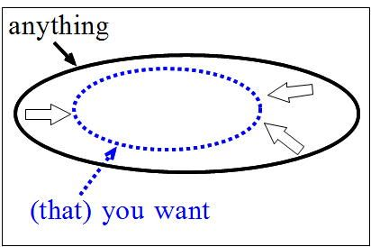
何の限定もないanythingの中から「あなたが欲しいもの」という限定を加えているわけだ。
そしてその後ろのthat you don't haveはこのanything (that) you wantを先行詞として、これを更に修飾（限定）している。
図では次のようになる。
anythingを二回にわたって、つまり「二重」に限定していることがわかるだろう。これが「二重限定」という文法用語の意味する内容である。
第３３章二重限定と挿入(4)
「関係代名詞の二重限定」と、「関係代名詞直後の挿入」は形が似ているから注意が必要だ。
典型的な例文で詳しく見てみよう。
①The manwho I thought was his uncleproved to be a stranger.
(私が叔父だと思った男は見ず知らずの人だった)
これは要するに「おじさんだと思った人は別人だった」つまり「私は人違いをしてしまった」という話しだ。
これは「関係代名詞直後の挿入」であり、次のようにI thoughtが挿入されたものである。
だから図のようにI thoughtが挿入される前の形を考えて、関係代名詞はwhoを使う。
また、thoughtの後ろはwasになる。
この形は、もともとI thought he was my uncle.が出発点になっているから、こういう形になるわけだ。
これに対して二重限定の文は、例えば次のようなものである。
②Jack is one of the boys (whom) I know who is suited for the spot.
(ジャックは私が知っている少年で、その地位に適任の少年の一人だ)
これはI know him.とHe is suited for the spot.の二つが加わって少年を二重に限定している。
そしてI know himが(whom) I knowに変わり、He is suited for the spot.がwho is suited...に変わっている。だからknowの後ろはwho is...の形になる。
両者の相違を対比させてみると次のようになる。
両者の区別を上のように対比させる形で暗記しようとすると、なにやらとても複雑そうに見える。
だから上のような形をそのまま暗記するのはやめよう。
それよりは、関係詞によって結びつけられる前の英文を念頭に置き、そこから出発して理屈で考えるようにしよう。
両者の違いを十分に理解しているかどうかを判断するには、次の二つの英文がきちんと訳し分けられるかを見ればよいだろう。
(A) Will you mention anyonethat you knowwho is as talented as Jack?
(B) Will you mention anyonewho you know is as talented as Jack?
どちらもほとんど同じだが、下線部が異なっている(mentionは「...に言及する」「...の名前を挙げる」の意味)。
どちらが二重限定で、どちらが挿入なのか、これまで理解した内容を前提に英文の意味を考えてみよう。どちらが二重限定でどちらが挿入かをきちんと区別できて、訳し分けられたなら、この問題は卒業だ（正解は次章）。
第３４章二重限定と挿入(5)
前章では二つの英文を示したが、どちらが挿入で、どちらが二重限定か、そして文の意味はそれぞれどうなるのか、ご自分で判断できただろうか。
まず(A)の英文から見ていこう。
(A) Will you mention anyonethat you knowwho is as talented as Jack?
これは、Will you mention anyone?
という英文に
You know him. (him = anyone)
と
He is as talented as Jack. (He = anyone)
との二つが二重に先行詞anyoneを限定している「二重限定」である。
Will you mention anyone?
だと「だれか挙げてくれませんか」の意味。この「だれか(anyone)」を「あなたが知っている」という第一の限定が加わって
Will you mention anyone that you know?
だと「あなたが知っている人を挙げてくれませんか？」となる。ここまでが第一の限定だ。
そしてこれに更に「ジャックと同じくらい有能な(who is as talented as Jack)」という限定が加わったのが上の例文である。
だから「あなたが知っている人で、ジャックと同じくらい有能な人の名前を挙げてくれませんか」の意味になる。
これに対して(B)の英文を見てみよう。
(B) Will you mention anyonewho you know is as talented as Jack?
は、
Will you mention anyone?
と
You knowhe is as talented as Jack. (he = anyone)
とが関係詞によって結びついた形だ。
まず、anyoneとheが同じものだからheがwhoに変わってanyoneの後ろに来る。
そしてYou know...のセンテンスで残りの部分がwhoの後ろに続く。
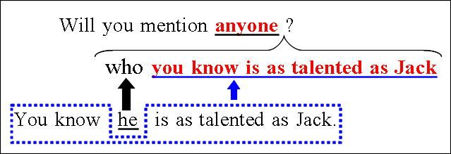
こうしてできたのが上の(B)の英文である。
要するに(B)の英文では、次の英文が加わったわけだ。
You know (that) he is as talented as Jack.
この英文ではknowの目的語は(that) he is as talented as Jackである。
つまり君が知っているのは、「彼がジャックと同じくらい有能だ」ということである。
だから「ジャックと同じくらい有能だとあなたが知っている人の名前を挙げてくれませんか？」ということである。
両者を整理すると次のようになる。
(A)では「知っている」のは「彼」つまり「人」である。だから「あなたが知っている人でジャックと同じくらい有能な人」を指摘してくれということだ。
これに対して(B)では「知っている」のは、「その人がジャックと同じくらい有能だ（という事実）」である。だから、「ジャックと同じくらい有能だとあなたが知っている人」を指摘してくれといっているわけだ。
知っている内容が「人」なのか、事実なのか、が両者の相違である。
【解答】
(A)「あなたが知っている人で、ジャックと同じくらい有能な人の名前を挙げてくれませんか？」
(B)「ジャックと同じくらい有能だとあなたがご存じの方の名前を挙げてくれませんか？」
第３５章二重限定と挿入(6)（問題演習）
「二重限定」と「挿入」の違いが理解出来たと思うので、問題演習で確認してみよう。
いきなり入試問題をやると、少し難しすぎるかもしれないので、私が作った確認問題で軽く小手調べをしてみよう。
【確認問題A】
This is the student （ ）I know who is as clever as Beth.
（選択肢）
a. who
b. whom
c. which
d. what
【確認問題A解説】「これは私が知っている生徒で、ベスと同じくらい賢い生徒です」の意味。
This is the student.に
I knowhim.
と
He is as clever as Beth.
が二重に加わった表現である。
I knowhim.のhim（目的格）がwhom（目的格）に変わる。だから空所にはwhomが入る。
【解答】
b. (whom)
【確認問題B】
The boy （ ）I thought was very healthy suddenly fell ill.
（選択肢）
a. who
b. whom
c. whose
d. what
【確認問題B解説】
「私が大変健康だと思っていた少年が突然病気になった」の意味。
The boy suddenly fell ill.
に
I thoughthe was very healthy.
が加わった形だからhe（主格）はwho（主格）に変わる。
したがって完成した英文は次のようになる。
The boywho I thought was very healthy fell ill.
【解答】
a. (who)
このように「挿入か二重限定か」の判定にあたっては、関係詞で結び付ける前の二つ（三つ）の英文をしっかり理解することが大切だ。このことは何も「挿入か二重限定か」の問題に限らず、関係詞一般に当てはまることであるが。
では実際の入試問題。
【第５巻 確認問題１８】
My friend（ ）I supposed would pass the examination has failed.
（選択肢）
a. who
b. whom
c. of whom
d. as（福岡大）
【第５巻 確認問題１８解説】
「私がその試験に受かるだろうと思っていた友人は落ちてしまった」の意味。supposeは「思う(=think)」の意味。
My friend has failed.
(私の友人は落ちた)
に
I supposedhe would pass the examination.
(彼は試験に受かるだろうと私は思っていた)
が加わったもの。
he（主格）がwho（主格）に変わるから空所にはwhoが入る。
【解答】
a. (who)
【第５巻 確認問題１９】
Japan has something America lacks（ ）makes its education system work well.
（選択肢）
a. such as
b. that
c. what
d. whichever（明治学院大）
【第５巻 確認問題１９解説】
① Japan has something.
(日本は何かを持っている)
に、
② America lacks it.
と
③ It makes its education system work well.
(それは教育制度をうまく働かせる)
とが加わったもの。
②のit（目的格）がwhich（目的格）になるが、これは省略されている。②のIt（主格）がthat（主格）になるから、完成した英文は次のようになる。
Japan has something(which) America lacksthat makes its education system work well.
なお③のmake its education system workは「make+O+原形」の使役動詞(O=its education system、workは「働く、機能する」の意味の自動詞）。make+O+workで「Oを機能させる」の意味。
完成した英文の意味は次の通り。
「アメリカには欠けているが、教育制度をうまく働かせる何かを日本は持っている」「アメリカにはないが、教育制度を効率的に働かせる何かが日本にはある」
【解答】
b. (that)
【第５巻 確認問題２０】
Many people criticized me, but I did what（ ）.
（選択肢）
a. I thought I was right
b. I thought it was right
c. I thought was right
d. I was thought right（センター試験）
【第５巻 確認問題２０解説】
「多くの人が私を批判するが、私は自分が正しいと思ったことをやったのだ」の意味。
butの後ろは
I did what was right.
(私は正しいことをやった)
にI thoughtが挿入された形である。
原理的に更に遡って、what = the thing whichから説き起こせば
I did the thing.
(私はそのことをした)
と
I thoughtit was right.
(それを私は正しいと思った)
のitはthe thingと同じだからこれがwhichになってthe thingの後ろに置かれる(whichは主格)。
そして残りのI thoughtとwas rightをwhichの後ろに続ける。
こうしてI didthe thing which I thought was right.という英文ができあがる。
そしてthe thing whichがwhatに置き変わったものが問題文の形である。
【解答】
c. (I thought was right)
第３６章関係形容詞whichの用法(1)
whatやwhichには関係形容詞としての用法がある。
「関係形容詞」という言葉は始めて耳にした、という方もいるかもしれない。
形容詞というのは例えば「かわいい犬(pretty dogs)」の「かわいい(pretty)」のように、名詞の様子を説明する語のことだ。そしてpretty dogsのように、後ろに名詞を従える形で使われることがある。
ここでの用法も次の例のようにwhatの後ろに名詞が来ている。だから「関係形容詞」と呼ぶわけだ。
詳しい解説は後で述べるとして、例文で具体例をまず見てみよう。
① I have readwhat books I have.
（私は持っている本はみんな読みました）（プログレッシブ英和）
② He may not come, inwhich case I'll take the chair.
(彼は来ないかもしれません。その場合は私が議長をします）（ニューセンチュリー和英）
①ではwhatの後ろにbooksがあるし、②ではwhichの後ろにcaseがある。
books（本）もcase（場合）もどちらも「名詞」だ。だからwhatやwhichは「関係形容詞」というわけだ。
関係代名詞の所有格whoseも後ろに名詞が続くから、関係形容詞の一つである。
③ Mrs. Brown,whose house we have rented for our vacation, is a rich widow.
（ブラウン夫人は我々が休暇中借りた家の持ち主ですが,金持ちの未亡人です）（英和中）
関係形容詞については参考書も問題集も余り多くを語らない。
①のwhat booksに関しては、「持っている本はみんな」の意味になるから、このwhatは「all theと同じだ」という趣旨の指摘をしているものもある。
①のwhat books I haveは「持っている本はみんな」の意味になるから、all theと書き変えられる。
①= I have readall the books I have.
だから「what = all the」なのだ、と説明されることになる。確かに結論だけを見ればそのように見える。
②のwhichに関しても「theやthatと同じ意味になる」という指摘がなされるだけなのが普通のようだ。
②は次のように書き変えられる。
② He may not come. Inthat(またはthe) case we have to wait for him.
だから「which = thatまたはthe」という説明になるわけだ。
しかしそのような結論だけの指摘では、問題の本質をよりよく理解するのは難しいだろう。どうして
what books = all the books
となったり、
in which case = in that case
になるのか。
なぜこんなところにwhatやwhichが出てくるのか、その理由が飲み込めないのではないだろうか。
次章以下ではどうしてこのような用法が生まれたのか、という点に踏み込んで解説しよう。
第３７章関係形容詞whichの用法（２）
関係形容詞の本質を理解するには、「代名詞と形容詞」の関係を理解するのが手っ取り早い。
例えば今机の上に本があるとしよう。
机の上に本があってそれが自分の本だと言いたい場合に、私たちはどのような表現を使うだろうか。
最もシンプルな表現は「あれ(that)」を使う言い方だろう。
That is mine.
(あれは私のだ)
この場合は「あれ(That)」で相手に通じるからThatだけを使うのが手っ取り早い。
これに対して、机の上に本以外に色々な物がある時にはどうだろう。
「あれは私のだ」と言っても「あれ」が何を指しているのかはっきりしない。
だから「本」のことを言いたいのであれば、「あの本(That book)」と言えば、相手にはわかりやすい。
That book is mine.
(あの本は私のだ)
ここでThatとThat bookの関係を整理してみよう。
両者は全く同じ物を指していて、どちらを使ってもよいことが多い。
ただ「あれ」としただけでは、それが何を指すのかはっきりしない場合がある。
このような場合はThat bookという表現を使った方が相手にはわかりやすい。That bookという言い方は、それが「何を指しているか」はっきりさせる働きがある、ということだ。
関係代名詞のwhichと関係形容詞のwhichとの違いもこれと全く同じである。
以上の点を辞書の例文で検討してみよう。
(A) Almost all businessmen wore gray suits,whichcolor was popular then.
（ほとんどすべてのビジネスマンはグレーのスーツを着ていました．その色は当時人気がありました）（ジーニアス英和）
これは「グレーのスーツ(gray suits)」ではなく、「グレー(gray)」という色を問題としたいケースである。この場合whichだけを使うとそれが何を指しているのかが読者には伝わりにくい。単にwhichだけを使うと「スーツsuits」あるいは「グレーのスーツgray suits」と読者にとらえられてしまう可能性がある。which colorとすることによって、「色(color)」を問題にしていることが読者に伝わる。
これはまさに前に述べたthatとthat bookの関係と同じだ。
(B) I said nothing,which fact made him angry.
(彼は黙っていたが、そのことが彼を怒らせた)（英和中）
whichの後ろに名詞のfactがついているから、ここで問題としている関係形容詞としての用法だ。そしてwhich factは「彼がだまっていたこと」を指している（先行詞にしている）。
同じ内容は次のように表現することも出来る。
(B) I said nothing,which made him angry.
（私が何も言わなかったが、そのことが彼を怒らせた)
whichが全文の内容を先行詞とする用法である。この用法については以前に解説した（→第25章「物と扱われる人（１）」）。
両者の本質的な違いはwhichの後ろにfactがあるかないか、ということだけだ。
そしてwhichとwhich factはどちらも先行詞は同じである。
それではwhichではなくwhich factを使った場合にどういう効果が期待できるかを考えてみよう。
which factにすると先行詞がnothingではなく、factつまり「事実」を指している(先行詞にしている）ことを示す働きがある。
whichだけだとnothingを先行詞としているのではないかと誤解する恐れがあるが、which factとすれば「何も言わなかったこと」という事実を指していることを明確にすることができるわけだ。
関係形容詞whichはこのように本来whichで済む場合に、わざわざ後ろに名詞を付けることによって、先行詞が何かをはっきりさせる働きがある。
それは上で述べたthatとthat bookの関係と同じである。
上の用法は「前文の内容」を先行詞とする用法だったが、「前文の内容の一部」を先行詞とする場合もある。
まずは関係代名詞としての用法から。
ex. I triedto solve a math problem,which was found to be impossible.
(私は数学の問題を解こうとしたが、不可能であるとわかった)
この場合「不可能(impossible)」だったのは、「問題を解くこと(to solve a math problem)」であるから先行詞は「前文の一部」である。
続いては関係形容詞の用法。
The doctor told her to take a few days' rest,which advice she followed. （医師は彼女に2, 3日休養するように勧め, 彼女はその忠告に従った）（新グローバル英和）
これは「数日間の休養を取ること(to take a few days' rest)」が先行詞になっているから、前文の内容の一部が先行詞になっているわけだ。
この場合はwhichだけをつかうと「先行詞はrestだ」という誤解を生みやすい。
which adviceにするとそのような誤解が防げるわけだ。
ここまでは「前文」あるいは「前文の一部」が先行詞となる場合だったが、単なる語が先行詞になる場合もある。
He spoke in German,which language I did not understand.
(彼はドイツ語で話したが、私にはこの言語はわからなかった）（英語語法大辞典）
このwhich languageはGerman（ドイツ語）を先行詞としている。
languageを付けずにwhichだけでもGermanを先行詞にできるが、which languageとすると先行詞がGermanであることを明確にできる。
whichは前文の内容を先行詞にすることがあるが、which languageとすると「前文の内容」ではなくGermanが先行詞であることをはっきりさせることができるわけだ。
関係形容詞のwhichはこのように、whichだけでもよいが、後ろに名詞を付けると何が先行詞であるかを明白にすることができる、という働きを持つ。
要するに関係形容詞whichは、
①前にある語
②前文の内容（の一部）
を先行詞とするという関係代名詞のこれまで見てきた用法を基本とし、その後ろに色々な語を付けて先行詞が何かをハッキリさせるものだ、ということだ。
第３８章関係形容詞whichの用法（３）
関係形容詞whichの本質が理解出来たと思うので、ここで似たような使い方をする関係代名詞の所有格whoseとの違いを確認しておこう。
前章で扱ったwhich languageをもう一度見てみよう。
He spoke in German,which language I did not understand.
他方whoseを使った場合は次のようになる。
He spoke in German,whose grammar I did not understand.
(彼はドイツ語で話しをしたが、その文法は私には理解出来なかった）
whichを使うべき場合と、whoseを使うべき場合を対比させて整理すれば次のようになる。
要するにlanguageの時にはwhichを使い、grammarの時にはwhoseを使うわけだ。
これはどのような理由によるのだろうか。両者を区別するにはどのようにしたらよいのだろうか。
これを解決するカギは「ドイツ語German」と「文法grammar」、「言語language」との関係である。
「ドイツ語(German)」には、「文法grammar」の他に「発音」」「単語」など様々な要素がある。図にすると次のような関係だ。
だから関係代名詞で結び付ける前の文で考えるとits grammarということになる(itsはGermanを指す）。
他方、「ドイツ語German」は英語・日本語などいくつもある「言語」の一つであるから、ドイツ語と言語は同じ次元である。
こういう場合は「ドイツ語」は「その言語」ということだからGermanはthat languageと言い換えられる。
だから関係代名詞で結び付ける前の文では、that languageということになる。
つまり関係詞を使って結び付ける前の文で、「所有格」を使う時にはwhoseにし、「that」を使う時にはwhichを使うというわけだ。
第３９章関係形容詞whichの用法（４）
関係形容詞の用法は、更にもっと複雑なものもあるから注意しなければならない。
それは「関係形容詞＋名詞」の前に「前置詞」が来る場合があるからだ。
In 1960 he came to Tokyo,inwhich city he has lived ever since.
（彼は1960年に東京に来て, それ以来都内に住んでいる）（ジーニアス英和）
which cityはTokyoを先行詞としていて、in which cityの代わりにin whichとすることもできるし、さらにはwhereを使うこともできる(where = in which)。
これはTokyoを指すのにwhichだけでもよいが、which cityとすることで、先行詞が何かをハッキリさせている。
whoseにも同じような使い方がある。次の例文のon whose shoulderはwhose shoulderに前置詞のonが付いたものだ。
You are one of the young peopleonwhose shoulders the fortunes of this country rest.
(君はこの国の将来を双肩にになう若者の一人だ）
これは二つのセンテンスにした時に次のようにtheirを使うためである。
The fortunes of this country rest ontheir shoulders.
（この国の運命は彼らの双肩にかかっている）(rest onは「...に依存している、...しだいである」の意味）
これに対してin which cityとなる場合は、Tokyoが「that city」と表現できる場合である。
「所有格+名詞」の形になる場合か、「that+名詞」の形になる場合かで、whoseとwhichを使い分けるというのは、前章の場合と同じである。
ここまでの内容を問題演習で確認してみよう。
【第５巻 確認問題２１】
His hair was going gray，（ ）fact bothered his wife a great deal.（福岡大）
（選択肢）
a. which
b. what
c. that
d. its
【第５巻 確認問題２１解説】
問題文の意味は「彼の髪の毛は灰色になりつつあったが、その事実は彼の妻を大いに悩ませた」→「彼の髪の毛に白髪がまじるようになったので、彼の妻はとても悩んでいた」ということ。
「彼の髪の毛が灰色になりつつあること(His hair was going gray)」という前文の内容を先行詞とする用法。whichだけを使ってもよいが、which factとすることもできる。
二つの英文にすると「その事実(that fact)」と表現できる場合だからwhich factとする。
選択肢c.のthatを使うと「S+V, S+V」のセンテンスになってしまう。

これが適切でないことは第17章（「S+V, S+V」の可否）で解説した。
【解答】
a. (which)
【第５巻 確認問題２２】
Most of the reward should be given to the young woman, （ ）quick and heroic action helped prevent the robber's escape.
（選択肢）
a. which
b. who's
c. whom
d. whose（北里大）
【第５巻 確認問題２２解説】
関係詞によって結びつけられる前の二つの英文を考えよう。
①Most of the reward should be given to the young woman.
(報奨金のほとんどはその若い女性に与えられるべきだ）
②Her quick and heroic action helped prevent the robber's escape.
(彼女の素早く勇敢な行動は犯人が逃げるのを妨げるのを助けた→彼女の素早く勇敢な行動のおかげで犯人の逃亡を防ぐことができた)
先行詞のthe young womanとactionの関係を考えると、her action(彼女の行動)となるべき場合である。だからher→whoseを使う。
helped prevent...はhelp (to) prevent...ということ。help (to) do（...することを助ける)のtoが省略されたもの。
完成した英文の意味は次の通り。
「報奨金のほとんどはその若い女性に与えられるべきです、彼女の素早く勇敢な行動のおかげで泥棒の逃走を防げたのですから」
【解答】
d. (whose)
【第５巻 確認問題２３】
Godzilla destroyed the house on （ ）roof was lying a beautiful lady.
（選択肢）
a. which
b. whose
c. of which
d. what （立命館大）
【第５巻 確認問題２３解説】
問題文の意味は以下の通り。
「ゴジラは美しい女性が横たわっている屋根の家を破壊した」
関係詞によって結びつけられる前の二つの英文を考えてみよう。
①Godzilla destroyed the house.
(ゴジラは家を壊した)
②A beautiful lady was lying onits roof.
(美しい女性がその家の屋根の上に横たわっていた)
「家(the house)」と「その家(roof)」の関係は所有の関係が成立しits roofと言える場合である。したがってits→whoseとなる。
【解答】
b. (whose)
【第５巻 確認問題２４】
The storm raged all night, during（ ）time climbers waited to be rescued.
（選択肢）
a. that
b. when
c. whose
d. which（南山大）
【第５巻 確認問題２４解説】
問題文の意味は「その嵐は一晩中猛威をふるったが、その間登山者たちは救出されるのを待った」ということ。
「一晩中(all night)」は「その時間(that time)」と表現できるからduringwhich timeとなる。
意味の上ではduringthat timeということだが、選択肢a.のthatは空所に入らない。thatを入れると「S+V, S+V」の形になってしまうからである。
【解答】
d. (which)
【第５巻 確認問題２５】
He might not come today,（ ）you should telephone him.
（選択肢）
a. which
b. to which
c. in which case
d. whichever way（獨協大）
【第５巻 確認問題２５解説】
問題文の意味は、「彼は今日ひょっとしたら来ないかもしれない、その場合には君は彼に電話をするべきだ」ということ。
二つのセンテンスにした場合、「彼は今日来ないかもしれない、その場合君は...」の意味になるべき場合であり、「その場合は」はinthat caseと表現できる。したがって関係形容詞のwhichを使ってin which caseとするべきである。
【解答】
c. (in which case)
第４０章関係形容詞whatの用法（５）
関係形容詞になるのは、which、whoseの他にwhatもある。
関係形容詞のwhatは次のような形で使われる。
ex.① I will buy youwhat books you want.
(君が欲しい本はなんでも買ってあげよう)
つまりこのwhatは「...の全ての...」の意味を表すわけだ。
だがどうしてそのような意味を表すようになったのだろうか。
whatは関係代名詞としてはthe thing(s) whichの意味がある。これを使って、
② I will buy you what you want.
とすれば、「君の欲しい物(what you want = the thing(s) which you want)を買ってあげよう」の意味になる。
これに対してwhatを関係形容詞として使った表現は元の表現にbookｓが加わったものである。
what you wantなら「君が欲しい物」の意味だが、bookを付けてwhatbook you wantとすると「君が欲しい本」の意味になるのだが、更に「君が欲しい本はなんでも」の意味を表すのが普通である。
「欲しい物を買ってあげよう」と言われたら何を欲しがるだろうか。
服・ぬいぐるみ・アクセサリーに始まって、パソコン・スマフォ更には自動車・家まで際限がない。
しかし社会人としての常識から言って、自動車や家までは含まれないと考えるのが普通だ。
他方「欲しい本を買ってあげよう」と言われたらどうだろうか。
「本ならどんなものでもよい」という気持ちになるのが普通だろう。
bookが付くことによって対象が絞られる反面、「本ならばなんでも」の意味を表すというわけだ。
この表現はwhatの後ろにlittleやfewを付けて「少ないながらもあるだけ全部の」の意味を表すことがある。littleは数えられない名詞に、fewは数えられる名詞に付く。
ex. I'll lend youwhat few books I have on the subject.
(その問題に関して少ないながらも私が持っている本はどれでもお貸ししましょう）（ジーニアス英和）
I gave herwhat little money I had.
（私は少ないながらも持っていた金を全部彼女にやった）
bookは数えられる名詞だからfewを使い、moneyは数えられない名詞だからlittleを使っている。
文法書や問題集にはほとんど記されていないようだが、whatのこの用法はwhateverを使って書き変えることができる。
ex. Wearwhatever hat you like.
(どれでも好きな帽子をかぶりなさい）（新グローバル英和）(whatever hat = what hat)
英和辞典ではwhateverのこの用法は「whatの強調形だ」と指摘されるのが普通である（ジーニアス英和、新グローバル英和、プロシード英和、研究社英和中、プログレッシブ英和など）。
詳しいことは次章以下の複合関係詞の箇所で詳述しよう。
第４１章複合関係詞：「たとえ...でも」(1)
複合関係代名詞というのは耳にしたことがあるだろうか。
例えば、関係代名詞のwhatの語尾に-everが付いたwhateverのような語を複合関係代名詞という。
関係副詞の場合も、関係副詞whenの後ろに-everが付いたwheneverなどを複合関係副詞という。
複合関係代名詞と複合関係副詞を合わせて複合関係詞という(なおthatやwhyには-everの形はない）。
文法の参考書や問題集では、「関係詞」の箇所にこの複合関係詞が取り上げられるのが普通である。
しかし、その本質は以下に解説するように関係詞との関連は希薄である。
それなのに、関係詞の箇所で無理矢理解説しようとするから、読者にはその本質が伝わりにくい。
多くの方が「-everが付いた形はよくわからない」と漠然と思っておられるのではないだろうか。
-everの表現を学ぶに当たっては、それが関係詞であることを一度忘れ、頭を白紙の状態にしてから学習を進める方が効率が良いように思う。
まずはwhatever, whenever...などに対して-everのない形、つまりwhat, when...を考えよう。
これらの語はどのような意味があるだろうか？
whatは「何」の意味の疑問詞と、「...する物」(=the thing(s) which)の意味の関係代名詞がある。
whenは「いつ」の意味の疑問詞と、「...する時」の意味の接続詞の用法がある。
このように複合関係詞と呼ばれる語は、疑問詞の意味とそれ以外の意味を持っている。
そして-everが付いた複合関係詞は、この二つの用法に対応する形で二つの用法がある。
そこでまず、-everの形の疑問詞に対応する用法から見ていこう。
例えばwhateverであれば、-everのないwhatを考える。whatは疑問詞としては「何」という意味だから「たとえ何が...しても」の意味を表す。
ex.Whatever happens, I will do it.
(たとえ何が起きても、私はそれをやります）（研究社英和中）
このように-everを取り除いた疑問詞としての意味を考え、それに「たとえ...しても」の意味を付け加えればよいわけだ。
だからwheneverならば、wheneverならば「たとえいつ...しても」の意味になる。
ex.Whenever you call on him, you will find him reading.
(たとえいつ彼を訪ねても、彼は読書しているでしょう)
whereverではwhereは疑問詞としては「どこへ[で]」の意味を表すから、「たとえどこへ[で]...しても」の意味になる。
ex.Wherever he hides, I will find him out.
(彼がたとえどこへ隠れようと、私は彼をみつけだしてやります)(プロシード英和）
要するに「たとえ」の後ろがどのような意味になるかは、疑問詞としての意味に対応している。「関係詞との関係は希薄だ」と前に述べたが、この用法は全くと言ってよいほど、関係詞とは関係がない。
この構文の意味は理解出来ただろうから、こんどはどういう形（語順）になるかに注目しよう。
「君がたとえ何を考えようと、私はこれをやります」という内容を英語で表現するにはどうしたらよいだろうか。
出発点は疑問文である。「君は何を考えるだろうか？」という疑問文が出発点になる。
意味が疑問詞に関連するのだから、どういう語順になるかの問題も疑問詞（疑問文）が関連してくるわけだ。
「君は何を考えるだろうか？」は次のように表現できる。
What do you think?
そしてこれを間接疑問のwhat you thinkにする。
間接疑問というのは、普通の疑問文が
Whatdo you think?
という疑問文の語順を取るのに対して、
whatyou think
のように平叙文の語順になるものをいう。平叙文というのは、主語の後ろに動詞が続く、つまり「S+V」の語順になる「普通の文」のことである。
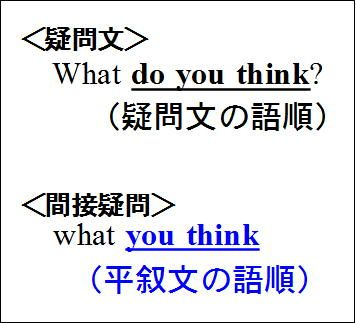
そしてこのwhat you thinkのwhatに-everを付けた形にすれば、目的の英文が完成する。
要するに
(a)疑問文を出発点にし、そこから
(b)間接疑問を作り、
(c)それに-everを付ける
という形でこの英文ができる、ということだ。
第４２章複合関係詞：「たとえ...でも」(2)
「たとえ何を...しても」などの意味を表す場合は
疑問文を出発点にして、それを間接疑問にした上で-everを付けるが、
-everの代わりにno matterを付けて同じ意味を表せる。
だから、「君がたとえ何を考えたとしても」は
Whatever you think
の代わりに
No matter what you think
とすることもできる。
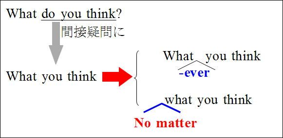
<参考>
少し難しい話なので、学力に自信のある方のみお読み下さい。
少し難しい話だが、no matterが上のような意味になるのは、matterが「問題」とか「重要性」の意味を持つことと関係がある。例えば
cf. It is no matter.
(それはたいした問題ではない)
のように使われる。
またno matterの前にはIt isが省略されていると考えられる。このItは間接疑問の部分を代表している。
だから元々は
(It is) no matter what you think
「あなたが何を考えるかは(It = what you think)はたいした問題ではない(is no matter)」ということから、「（たとえ）あなたが何を考えても」の意味になる。
「no+名詞」の前にIt isが省略される形としては(It is) No wonderなどがある。
cf. (It is) No wonder the students are excited.
(生徒たちが興奮しているのも当然だ)
<参考>終わり
-everやno matterを使った具体例を概観しておこう。
whoever = no matter who
Whoever [No matter who]comes, I won't let him in.
(たとえ誰が来ても、中に入れませんよ）（ジーニアス英和）
whenever = no matter when
Beginners are welcome,whenever [no matter when] they come.
(初心者はたとえいつ来られても、歓迎致します）(ジーニアス英和）
wherever = no matter where
Wherever [No matter where] he hides, I will find him out.
(彼がたとえどこへ隠れても、私は彼を見つけ出します）（プロシード英和）
whichever = no matter which
The quality will be the same, whichever [no matter which] of them you choose.
(それらのうちのたとえどれを選んでも、品質は同じでしょう）（プロシード英和）
whichは後ろに名詞を付けて「どちらの...」の意味を表すことがある。
Whichever book you borrow, you must return it by Monday.
(たとえどの本を借りても、月曜までに返さなければなりません）（ジーニアス英和）
上の例文ではWhichever bookとなっているが、bookを付けずにWhichever you borrowとすることもできる。この場合は「たとえどれを借りても」の意味になる。
whatやwhateverも同じように後ろに名詞を付けることができる。
ex.Whatever language you study, you cannot master it in a short time.
(たとえどんな言葉を学ぶにしても、短時間では修得できない）
この場合もWhateverの後ろのlanguageを削ってWhatever you studyとできる。その場合は「たとえ何を学ぶにしても」の意味になる。
howeverについては、語順がよく出題される。
howの意味・用法が2つあることに対応して、語順は2つの形になるから注意が必要だ。
まずhowは2つの意味があることに注意しよう。
(1)「どのように」の意味になる場合と、
(2)「どれくらい」の意味になる場合だ。
(1)「どのように」の意味の時にはhowは後ろに何も付けずに使う。
ex.How do you go there?
（あなたはどうやって[どのようにして]そこに行きますか）
だからhoweverを「たとえどのようにして」の意味で使う時にも、その後ろには何も付けない。
ex.However you go, you must get there by ten.
(たとえどのように行くとしても、10時までにそこにつかなければならない）
(2)「どれくらい」の意味の時にはhowの後ろには形容詞や副詞が続く。
形容詞が続く場合は次のようになる。次の英文のhotは「暑い」の意味の形容詞。
ex. How hot is it?
(どれくらい暑いですか）
したがって「however hot+S+V」の形になる。
ex.However hot it is, he will not take off his coat.
(たとえどんなに暑くても、彼はコートを脱がない）（プロシード英和）
However it ishot(×)という語順にはならないから注意しよう。
副詞が続く場合は次のようになる。次の英文のfastは「速く」の意味の副詞。
ex. How fast do you run?
(君はどれくらいの速さで走りますか）
したがってhoweverを使った場合も「however fast +S+V」の語順になる。
ex. You cannot catch up with a car,however fast you run.
(たとえどんなに速く走っても、車には追いつけないよ）（プロシード英和）
この場合もhowever you runfast（×）という語順にはならない。
<慣用表現>
whateverは否定文に付けられて、「全く...（ない）」の意味を表す。
ex. She has no faultswhatever.
(彼女には全く欠点がない）（ニューアンカー英和）
この用法は、whateverが「（たとえ）何であっても」の意味になることと関係している。
She has no faults.だと「彼女には欠点はない」の意味だが、これにwhateverを付けて、
She has no faultswhatever.
とすると、「彼女には欠点はない、どんな欠点も」という意味になって、否定表現を強調するわけだ。
whateverのこのような用法は、否定文だけに限られない。次のように疑問文でも使われる。
Is there any chancewhatever? (プログレッシブ英和)
whateverを付けずに
Is there any chance?
とすると、「可能性はありますか？」の意味だが、これにwhateverを付けて、
Is there any chancewhatever?
とすると、「可能性はありますか、どんなものでも（いいですが）」ということになって、疑問文を強調することになる。だから「少しでも可能性はありますか」などの意味を表す。
whateverのこの用法は、直前に名詞や代名詞がある場合に使われる（プログレッシブ英和）。上の例文でも名詞のfaultsやchanceの後ろにwhateverが来ている。
これは、「彼女は欠点がない(She has no faults.)どんな欠点も(whatever)」とか、
「可能性はありますか(Is there any chance?)どんなものでも(whatever)」などの意味が出発点になっていることに着目すれば、すんなり納得できる結論だろう。
次の例文では代名詞のnothingの後ろに来ている。
例えば、
I know nothingwhatever about it.
(私はそれについては何も知りません)
第４３章複合関係詞：「たとえ...でも」(3)
これまで確認した内容を前提に、入試問題にチャレンジしてみよう。
【第５巻 確認問題２６】
Keep on with your studies, （ ）hard it sometimes seems.
（選択肢）
a. however
b. no matter what
c. so
d. whatever （センター試験）
【第５巻 確認問題２６解説】
「時々、たとえどんなに困難に見えるとしても、あなたの勉強[研究]を続けなさい」の意味。
hardは「難しい」の意味の形容詞だから、no matter how hardや、however hardの形を使う。
選択肢b.はno matterの後ろのwhatが不適切。
【解答】
a. (however)
【第５巻 確認問題２７】
I wouldn't read that book （ ） who recommends it.
（選択肢）
a. regardless
b. however
c. no matter
d. since
e. whatever （姫路獨協大）
【第５巻 確認問題２７解説】
空所の後ろにwhoがあるからno matter whoの形を使う。no matte whoの代わりにwhoeverを使っても同じ意味になる。
「たとえ誰が薦めても私はおそらくあの本を読まないだろう」の意味。wouldn'tは「どうしても...しようとしなかった」の意味ではない。推量の助動詞will(...だろう）を仮定法で使ったもので「（おそらく）...だろう」の意味。
【解答】
c. (no matter)
【第５巻 確認問題２８】
（ ）, you've got to visit your mother; after all, she lives alone.
（選択肢）
a. However busy you are
b. However you are busy
c. Whatever you are busy
d. Whatever busy you are (純心女子短大)
【第５巻 確認問題２８解説】
「たとえどんなに忙しくても、あなたはお母さんを訪問しなければなりませんよ。だって一人で生活しているんですから」の意味。
howは「どれくらい」の意味で用いられており、how busyの形で「どれくらい忙しい」の意味を表す。
ex. How busy are you?
(あなたはどれくらい忙しいですか）
だからhowever busy you areの語順で「たとえどれほど忙しくても」の意味になる(however you are busy(×)とはならない）。
you've got toはyou have got toということで、you have toと同じ意味。時制の巻（どうしてそうなる英文法＆イディオム 1.時制）でhave got = haveとなることに関連して解説した。
【解答】
a. (However busy you are)
【第５巻 確認問題２９】
Does British foreign policy remain the same, （ ） party is in power?
（選択肢）
a. whoever
b. however
c. whichever
d. wherever （立命館大）
【第５巻 確認問題２９解説】
「たとえどちらの政党が政権を握ったとしても、イギリスの外交政策は同じであり続けますか？」の意味。remainは「...のままでいる」の意味。(be) in powerは「力のある状態で（ある）」ということから「政権を握って（いる）」の意味。
which partyで「どちらの政党」の意味を表すからwhicheverを使う。
【解答】
c. (whichever)
【第５巻 確認問題３０】
There is no doubt（ ）about her knowing the truth of the matter.
（選択肢）
a. however
b. whatever
c. whenever
d. wherever
e. whichever （上智大）
【第５巻 確認問題３０解説】
whateverを使った慣用表現である。
whateverが否定文を強調して「まったく...ない」の意味を表すことがある。
There is no doubt whatever.で
「疑いはない、たとえどんなものも」ということから「疑いは全くない」の意味を表す。
したがって全体では、「彼女が真実を知っていることについては、全く疑いがない」の意味。
her knowing...はknowの動名詞に意味上の主語herが加わったもの。「彼女が...を知っていること」の意味。動名詞の意味上の主語はこのように、所有格や目的格で表す。
文の骨格はThere is no doubtwhatever about Xで「Xについては全く疑いがない」の意味。
【解答】
b. (whatever)
第４４章複合関係詞：「なんでも、いつでも」(1)
-everのもう一つの用法は、「何でもいい、誰でもいい」のニュアンスをもつ用法である。
この用法も前章までと同じように、「疑問詞としての意味」が基本になる。
例えば
whoeverのwhoは疑問詞としては「誰」の意味だから、whoeverは「...する人はだれでも」の意味になる。
ex. We will welcomewhoever wants to come.
(来たい人は誰でも歓迎しますよ）
whoever wants to comeで「来たい人は誰でも」の意味になる。
wheneverのwhenも疑問詞としては「いつ」の意味だからwheneverで「...する時はいつでも」の意味になる。
ex. He comes to see me,whenever he has some difficulty.
(彼は困った時はいつでも、私に会いに来る)
「...する人は誰でも」、「...する時はいつでも」のように、「だれでもいい」「いつでもいい」のニュアンスになるのが-everの第二の用法の特徴である。
whoever, whenever以外の語についても概観しておこう。
whereverのwhereは疑問詞としては「どこ」の意味だからwhereverで「...するところはどこでも」の意味になる。
ex.Wherever there is plenty of sun and rain, plants grow.
(太陽と雨がある場所ならどこでも植物は育つ)
whateverはwhatが「何」の意味になるからwhateverで「...する物は何でも」の意味になる。
ex. I'll getwhatever I want.
(私は欲しい物はなんでも手に入れます）
whicheverのwhichは「どれ」の意味だからwhicheverは「...する物はどれでも」の意味になる。
ex. Choosewhichever you like better.
(好きな方をどれでも選びなさい）
-everの第二の用法の意味は理解出来たと思うので、入試問題を念頭にもう少し掘り下げて見てみよう。
第二の用法の特徴は「だれでもいい」「いつでもいい」のニュアンスであることは前述したが、この内容を他の語で表すとanyになる。
anyは文法の色々なところで顔を出し、その意味と用法は複雑だ。詳しい内容は形容詞の巻で詳述するが、anyで最も重要な意味は「どれでもいい」「だれでもいい」の意味である。
だからこの-everの第二の意味にぴったり合うというわけだ。
例えば、「...する物は何でも」の意味のwhateverはanything thatの形に書き変えられる。
ex. Eatwhatever you like.
= Eatanything (that) you like.
(好きな物はなんでも食べなさい）
whenever S+Vもanytime S+Vの形に書き変えられる。
You can call on mewhenever you are free.
= You can call on meanytime you are free.
(暇な時はいつでも訪ねてきて下さい）（プログレッシブ英和anytime)
wherever S+Vもanywhere S+Vに書き変えられる。
Gowherever you like!
= Goanywhere you like!
(どこへでも好きな所へいってしまえ！）（ジーニアス英和）
whoeverはanyone whoに書き変えられる。
We will welcomewhoever wants to come.
= We will welcomeanyone who wants to come.
whicheverはanything thatの形に書き変えられる。
Choosewhichever you like.
=Chooseanything (that) you like.
(どれでも好きなものを選びなさい）
whicheverは選択肢が与えられている場合に使うのに対してwhateverは選択肢が与えられていない場合に使う。疑問詞のwhatとwhichの使い分けと同様である。
上図のように選択肢が与えられたものの中から選ぶ場合は「どれでも」の意味のwhicheverを使う。
これに対してwhateverは選択肢が与えられていない場合に使われる。
ex. You can buy whatever you want.
(欲しいものはなんでも買っていいですよ）
whateverとwhicheverは後ろに名詞を付けることがある。
ex. You may readwhatever book you like.
(君の好きな本はなんでも読んでよい）
= You may read any book you like.
この用法は、かつて関係形容詞の箇所（第37章関係形容詞whichの用法）でthatとthat bookとの相違として指摘したことがそのまま当てはまる。whateverだけでもだいたい同じ意味を表すことができる。
cf. You may read whatever you like.
(君はなんでも好きなものを読んで良い）
ただ、後ろにbookを付けると、「読んでよいのは本だけだ」ということを明示できる。読むことができるのは本に限られない。雑誌(magazine)、新聞(newspaper)、日記(diary, journal)、パンフレット(pamphlet)...など、活字が書いてあるものはなんでも読むことができる。しかしwhateverの後ろにbookがあると、読んで良いのは「本だけだ」ということになるわけだ。
whicheverも同様だ。
ex. Take whichever book you like.
(どれでも好きな本を選びなさい）
= Take any book (that) you like.
第４５章複合関係詞：「なんでも」「いつでも」（２）
複合関係詞の第二の用法は、一見するとさほど難しそうではないが入試問題のレベルだと結構難しい。
【第５巻 確認問題３１】
It's not only her friends that Ms. Kinoshita is kind to. She helps（ ）needs her help.
（選択肢）
a. those
b. whatever
c. whoever
d. whom（センター試験）
【第５巻 確認問題３１解説】
「木下さんは彼女の友人にだけ親切なのではない。彼女の助けを必要としている人は誰でも助ける」の意味。
whoever needs her helpで「彼女の助けを必要としている誰でも」の意味で、anyone whoと書き変えられる。whoeverやwhicheverは先行詞を含んでいることに注意しよう。
【解答】
c. (whoever)
【第５巻 確認問題３２】
You may read any book that you like.
= You may read（ ）you like.
（選択肢）
a. whenever book
b. wherever book
c. however book
d. whatever book （東海大）
【第５巻 確認問題３２解説】
You may read whatever you like.
(君は好きなものならなんでも読んで良い）
のwhateverの後ろにbookが付いたもの。
【解答】
d. (whatever book)
【第５巻 確認問題３３】
Choose（ ）one of the three methods you fancy.
（選択肢）
a. whatever
b. whichever
c. whenever
d. wherever （関西外大）
（注）fancy：...を好む(=like)
【第５巻 確認問題３３解説】
「三つの方法の中でどれでもあなたが好きなものを選びなさい」の意味。
選択肢が与えられていてその中の「どれでも」いいから選べということだから
Choose whichever you fancy.
(どれでもあなたの好きなものを選べ）
が基本形である。
このwhicheverにone (=method)が付き、更に「三つの方法の中で」の意味のof the three methodsという語句が付着したのが設問の形である。
【解答】
b. whichever
また入試ではwhoeverとwhomeverの区別も頻出である。
① He talked towhoever sat next to him.
(彼は自分の隣に座った人には誰にでも声をかけた）（プログレッシブ和英）
② You may invitewhomever you like.
(君が好きな人には誰でも招待して良い）（プロシード英和）
上の例文でtoがあるとwhomを使いたくなる。
しかしwhoeverとwhomeverのどちらを使うかは、その後ろに続く語句との関係で決まる。
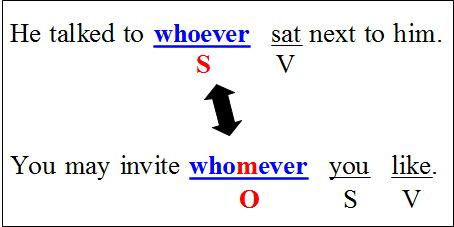
①のように主語になる場合はwhoeverを、②のように目的語になる場合はwhomeverを使う。
【第５巻 確認問題３４】
I'll give this dress to （ ） among you can wear it. (津田塾大)
（選択肢）
a. who
b. whom
c. whoever
d. whomever （愛知学院大）
【第５巻 確認問題３４解説】
「あなたたちの間でこのドレスを着られる人には誰にでも、それをあげましょう」の意味。
whoeverになるかwhomeverになるかは、後ろに続く語句との関係で決まる。
空所がS, can wearがV, itがOの関係が成り立つからwhoeverを使う。
whoやwhomは先行詞がないから使えない。whoeverやwhomeverは「だれでも」の意味のanyoneがその中に含まれている(whoever = anyone whoなど）。
空所の後ろのamong youは、本来は文末にあるべきもの。つまり次の形が本来的な位置である。
I'll give this dress to whoever can wear itamong you.
しかし、このように短い語句は前に移動することがある。これについては次章で確認しよう。
【解答】
c. (whoever)
第４６章関係詞と語句の位置
関係詞を使った英文は先行詞の直後に関係詞節が続くのが原則である。
しかし本来その後ろに続くべき語句が、前に移動する場合がある。
例えば次のような場合だ。
Willthe day soon comewhen we can make a trip to the moon? （私たちが付きに旅行できる日はすぐにやって来るだろうか？）
これはthe dayが先行詞、whenが関係副詞だから本来は
the day when we can make a trip to the moon
(私たちが月にできる日）
になるはずだ。
そしてこれが主語であり、英語はS+Vの語順が基本だからsoon comeはその後ろに来るのが本来の姿だ。
しかしそうなると主語がとても長くなってしまってちょっとバランスが悪くなる。
そこでsoon comeが前に移動した形になったわけだ。
上の場合は「動詞（＋副詞）」が関係詞の前に移動した形である。しかしこのような現象は、「動詞（＋α）」にに限られない。
例えば、「世界には人権を侵害されている人がたくさんいる」を英訳した次のような場合だ。
There are a lot of people in the world whose human rights are violated. （ニューアンカー和英 「侵害」）
「人権を侵害されている人々」は
people whose human rights are violated
である。
「世界の中にAがある」は
There is A in the world.
の形を取るのが原則だから、本来は次のような語順になるはずだ。
しかしそうなるとThere areに続く部分（上のAの部分）が長くなりすぎてしまう。そこでin the worldを前に移動したのである。
このような現象は、どのような場合に起こるのだろうか。
ここで説明の便宜のために、上のa lot of peopleの部分をA、whose以下の部分をB、in the worldの部分をCとしよう。
このような現象は通例BがCよりも長い場合に見られるのが原則だが、B=Cの場合にも見られることがあるからB≧Cの場合だと考えておくとよいだろう。逆に言うとCがBよりも長い場合(B<Cの場合）にわざわざCが前に移動することはない（慣用表現を除いて）。
ここまでは関係詞を使った表現の場合を見てきた。しかしこのような現象は関係詞を使った表現だけに見られる現象ではない。
例えばkeep A in mind (Aを心にとどめておく）という表現だ。
これは「Aを心の中に(in mind)保つ」ということから「いつも心の中にもっている」というところから来ている(keepの代わりにbearを使ってbear A in mindとすることもある）。
これは例えば次のように使われる。
ex. Keep this in mind.
(これは心にとどめておきなさい）(プログレッシブ和英）
だがkeepの目的語が次のように長くなる場合にはin mindが前に移動する。
ex. Keepin mindthat you must not be late for work.
(仕事に遅れてはいけないということを心にとどめておきなさい）
この表現ではthat節がkeepの目的語になる場合には、ほとんど常にin mindが前に移動する。このような現象は、英文解釈でよく問題になるが、その他に熟語を学ぶ際にも必要な知識なので、是非覚えておいていただきたい。
以下の問題では先行詞が何かがわかりにくいものも含めて、問題演習で確認してみよう。
【第５巻 確認問題３５】
Last night Cindy told me about her new job in Tokyo,（ ）she appears to be enjoying very
much.
（選択肢）
a. which
b. where
c. what
d. when （センター試験）
【第５巻 確認問題３５解説】
空所にはwhichを入れる。先行詞は(her new) jobである。in Tokyoという短い語句が入ってきている。
「昨晩シンディーは彼女の東京での仕事について私に話してくれたが、彼女はその仕事をとても楽しんでいるようだった」の意味。
【解答】
a. (which)
次の問題は難問。[ ]内の語を並べ変えて日本語に合う英文にせよ。
【第５巻 確認問題３６】
人生には落ち着きたくなる時が来るものだ。
There [a, comes, in, lives, our, point, when] we want to settle down.（上智大）
【第５巻 確認問題３６解説】
There come Xは「Xが来る」の意味。
There is構文は「...がある」の意味を表すが、be動詞の代わりにappear (現れる）、come (来る）など「出現」を表す動詞が来ることがある。
ex. There may come a time when we shall meet again.
(再会の時が来るかもしれない）（プログレッシブ英和）
このThere come Xという構文を使って次のような英文にすればよい。
Therecomes a point in our lives when we want to settle down.
whenはpointを先行詞とする関係副詞。元々は
There comes a point when we want to settle down in our lives.
という形である。
pointは時間的な意味での「点」だから、a point when we want to...で「私たちが...したい時間的な点」つまり「私たちが...したい時」ということ。したがって英文全体では「私たちが...したい時が、私たちの人生の中にやって来る」の意味。
そして文末のin our livesがwhenの前に移動してきた形が問題文の形である。
【解答】
(There)comes a point in our lives when (we want to settle down.)
第４７章疑似関係代名詞(1)
as, than, butなどは、本来は接続詞の働きをしていたものが、関係代名詞的に使われる場合がある。これは疑似（ぎじ）関係代名詞と呼ばれることが多い。
この「疑似関係代名詞」は、接続詞と関係代名詞の中間的な用法である。接続詞とは呼びにくいが、完全な関係詞とも呼びにくい。そういう特殊な位置に置かれているため「疑似」という語が付けられている（「疑似」は「よく似ていること」の意味）。
抽象的な話しになるとややこしくなるから、具体例でお話ししよう。次のasが「疑似関係代名詞」と呼ばれる用法だ。
① Her feet was bare, as was the custom in those days.
（彼女は素足だったが、それは当時の習慣だった）（ジーニアス英和）
この表現で、as was the customはasが主語(S)、wasが動詞(V)、the customが補語(C)である。
asを関係代名詞として使う場合は、このようにasが主語(S)になる場合が典型的である。
このようにas以下のセンテンスでasが主語などになる用法を「疑似関係代名詞」という。
asのこの用法は、前文の内容を先行詞としている。つまり「彼女の足は裸足だった(Her feet was bare)」というセンテンスを先行詞としている。
だから英文の元々の意味は、「彼女は裸足だった、そうすることは当時の習慣だった」ということである。
ところで前文の内容を先行詞とする用法はwhichにも見られる。これは第25章「『物』と扱われる人」で解説した。
whichのこのような用法を使えば、上の①の例文は次のように書き換えられる。
① Her feet was bare,as was the custom in those days.
=② Her feet was bare,which was the custom in those days.（両者の書き換えが可能であることはジーニアス英和asに明記されている)
両者の相違はasがwhichになっただけで、それ以外は全く同一である。
ただしasとwhichが全く同じように使われるわけではない。これについては後に詳しく解説するが、その前に「このような表現がどうして生まれたのか」を見ていくことにしよう。
これを理解すれば、whichとの用法の相違も自然に理解できるようになる筈である。
まず次の英文を見てもらいたい。
③ He is well versed in French literature,asit appears from this essay,
(この論文からも明らかなように、彼はフランス文学に精通している）
この表現でitは「彼がフランス語に精通していること」を指している。itはこのように前文の内容を指すことがある。
そしてasは「...のように」の意味の接続詞である。asが「...のように」の意味の接続詞として使われることは多くの方がご存じだろう。
appearは「現れる」の意味である。
だからit appears from this essayの部分は、「そのことは(=it)この論文から現れ出てきている」という意味である。つまり「そのことはこの論文から明らかだ」と述べているわけだ。
そしてそれに「...のように」の意味の接続詞asがついているから、as it appears from this essayの部分は「この論文から明らかなように」の意味になる。
このようなasの用法は接続詞である。接続詞はこのように後ろがS+Vの形になる。
それではasの関係代名詞としての用法はどうだろうか。
実は上の例文でitを省略した形が関係代名詞としての用法である。
④ He is well versed in French literature,as appears from this essay.
③ではitが「彼がフランス文学に精通している」という部分を指していたが、itを省略してasがitの代わりをしその部分を指すという形を取るのが関係代名詞としての用法である。
つまりasの関係代名詞としての用法は、as it+Vのitが省略された形が基本になっているわけだ（itがあるとasは「接続詞」だが、itがないと「関係代名詞」になることに関しては、新グローバル英和asに解説がある）。
ところでas S+Vのような「接続詞+S+V」は、主節に対して前・真ん中・後ろというように、比較的自由な位置を占めることができる。
そこでasを関係代名詞として使う場合も、前・真ん中・後ろの位置を占めることができる。
上の例文④はas節が文末に置かれたケースだが、次のように文頭に置かれることもある。
⑤As is usual, Bob came to school late this morning.
(いつものように、ボブは今朝も学校に遅刻した）（新グローバル英和）
as-節が真ん中にくる場合としては次の例がある。
⑥ Jeremy,as was usual with him, took everything quietly.
(ジェレミーはいつものように、万事を冷静に処理した)(英語語法大辞典)
主節の内容を先行詞とする用法は、whichにもある。しかしwhichの場合は必ず先行詞となる主節の後ろに来なければならない。
通常の関係詞は必ず先行詞が先で、関係詞は後ろである。
しかし接続詞を起源に持つasの場合は、必ずしもこの語順に従わなくてもよいわけだ。この点がasとwhichとの相違である。
また「...ように」の意味の接続詞が出発点になっているから、関係代名詞の場合も「...ように」の意味のニュアンスを持つことが多い。
例えば⑤のAs is usualや⑥のas was usualはどちらも「いつものように」の意味になる。
次章ではasの関係代名詞としての用法を更に詳しく見てみよう。
第４８章疑似関係代名詞(2)
前章で述べたasを使った慣用表現としては、次の表現が重要だ。
as is often the case with Xは、「...にはよくあることだが」の意味を表す。
ex. As is often the case with young women, she is worried about getting fat.
(若い女性によくあることだが、彼女は太ることを心配している）
この表現はほとんどの方が丸暗記しているようだ。
しかしthe caseの用法と共にきちんと理解しておくと応用が効く。難度の高い学校を目指すなら、理屈をキチンと暗記しておく方が近道だろう。
この表現のポイントはasよりはむしろthe caseだ。
the caseは「真実(=fact)、実情」などの訳が当てはまる場合がある。
例えば、
Is itthe case that he has lost all his money?
(彼が金を全部なくしたというのは事実なのか？）（プロシード英和）
この「事実」という意味のthe caseは、「実際にそうなっている」というニュアンスを表すことが多い。
Most women emigrated together with men. Such wasthe case throughout New England.
(ほとんどの女性は男性と共に移民した。ニューイングランドのいたる所でそうすることが事実だった[ニューイングランドのいたる所でみんなそうだった]）（ジーニアス英和）
上の「若い女性に良くあることだが、彼女は太ることを心配している」という例文でthe caseの用法を確認してみよう。
まず文頭のAsは「太ることを心配している」という主節の内容の一部を先行詞にしている。
そして「若い女性の場合は(with young woman)では、しばしば(often)実際にそうなっている (as is the case)」というのがこの表現である。
ここから「若い女性にはしばしば[よく]あることだが」の意味になる訳だ（「しばしば」は「よく」と同義）。
関係代名詞を使った表現ではないが、上で述べたようなthe caseを使った表現ではsuch being the case(こういうわけだから)がある。
これは分詞構文に由来する表現で「そういうことが(such)実際には事実になっている(being the case)」ということである。分詞構文が理由を表す場合である。
ex.Such being the case, I stayed home all day.
(こういうわけで私は一日中家にいました)
＜その他＞
butはthat...notの意味の関係代名詞になることがある。歴史的に見るとbutはとても難解な表現なので、「どうしてそうなるか」の説明は困難である。これは「丸暗記」して下さい。
ex. There is nobodybut has his faults.
(欠点のない人はいない）
= There is nobodythat doesn't have his faults.
その他、asやthanは次のような慣用表現で関係代名詞として使われることがある。
① such ... as（～のようなそのような...）
You should teach the studentssuch thingsas will be useful in later life.
(学生には後になって役に立つようなそういうことを教えるべきだ）
② the same ... as（～と同じ...）
It's the same story as I heard from her yesterday.
(それは昨日彼女から私が聞いたのと同じ話しだ）（プロシード英和）
③ as ... as（～するのと同じだけ...）
They admitted as many men as came.
(彼らは来た人は全員受け入れた）←「来た人と同じだけたくさんの人を受け入れた」から
④ 比較級+than
ex. He accomplished morethan was expected of him.
(彼は自分に期待された以上のことを達成した）
これらは特に「関係代名詞」ということを意識しなくても、それぞれの慣用表現の延長線上で理解すれば特に問題はないだろう。
第４９章疑似関係代名詞(3)（演習問題）
【第５巻 確認問題３７】
He was a foreigner,（ ）they perceived from his accent.
（選択問題）
a. what
b. as
c. because
d. so（福岡大）
【第５巻 確認問題３７解説】
「彼の訛りから彼らが認識したように、彼は外国人だった」の意味。
asが主節の内容つまり「彼が外国人であること(He was a foreigner)」を先行詞としている。
【解答】
b. (as)
【第５巻 確認問題３８】
Grandpa,（ ）was usual with him, took the dog out for a walk.
（選択肢）
a. it
b. as
c. what
d. who
e. although（早大）
【第５巻 確認問題３８解説】
「祖父はいつものように、犬を散歩に連れて行った」の意味。
先行詞は「祖父が犬を散歩につて行った(Grandpa took the dog out for a walk)」であり、asに導かれる節が文の真ん中に来ている。
【解答】
b. (as)
【第５巻 確認問題３９】
People say that there is no man（ ）has some defects.
（選択肢）
a. that
b. who
c. but
d. as（東洋大）
【第５巻 確認問題３９解説】
butがthat...notの意味の関係代名詞になる場合である。
「欠点を持たないひとはいないと人々は言う」の意味。
there is no man but has...=there is no manthat doesn't have...。
【解答】
c. but
第５０章関係詞の省略
関係詞の最後に、「関係詞の省略」を見てみよう。
「関係詞の省略」については、その全てを合理的に説明するのは難しい。
だが全体的な傾向をとらえることは不可能ではない。
ここでは「関係詞の省略」の問題を整理しておこう。
①関係代名詞の目的格は省略できる。
ex. The girl(whom) John married is a nurse.
(ジョンが結婚した女性は看護婦だ)（ジーニアス英和）
この省略は、これをお読みの方なら、あえて触れるまでもない「常識」だろうから、細かくは触れない。
②関係副詞は「先行詞or関係副詞」のどちらかは省略できる。
例えば、the reason whyでは先行詞のthe reasonかwhyのどちらかを省略できる。
ex. Tell me the reason(why) you were silent then. ←関係副詞の省略
= Tell mewhy you were silent. ←先行詞の省略
（その時君が黙っていた理由を教えてくれ)(例文はどちらもニューアンカー英和）
特に関係副詞howではthe way how(×)とはせずに、the wayまたはhowのどちらかを必ず省略する。現代英語ではthe way how(×)は間違いだとされている。
ex. This is ( )how they built the bridge. ←先行詞the wayの省略
（これが彼らがその橋を作った方法だ、こうやって彼らはその橋を作った）（プロシード英和）
Nobody likesthe way ( ) you behave. ←関係副詞の省略
(誰も君がふるまう方法を好きではない、君の振るまい方を好む人はいない）（新グローバル英和）
以上は、これまでに既に確認した内容である。
ここでは更に難解な問題を考えていこう。
既に述べたように「目的格の関係代名詞」は省略できるのだが、主格も一定の条件の下で省略が可能である。
その「一定の条件」として、試験でよく出題されるのは以下の二点である。
①「挿入」の場合。
②補語になる場合。
①「挿入」というのは、第30章（二重限定と挿入）以下で解説した表現方法である。
例えば、
My friendwho I supposed would pass the examination has failed.
(私が試験に受かるだろうと思った友人は落ちてしまった)
この文章はMy friendwho would pass...にI supposedが挿入された形である。
だからfriendの後ろには主格の関係代名詞whoが来る。このことは以前に何度も確認してきたことだ。
ここで重要なことは、この主格のwhoは省略できるということである。
「主格」であるのに省略できるわけだ。
②補語になる場合
これは例えば次のような場合だ。
ex. He is not the man(that) he was ten years ago.
(彼は十年前の彼ではない)
このthatは「先行詞が人なのにwhoが来ない場合」だとして、第25章（「物」と扱われる人）以下で詳しく解説したものだ。補語になる場合は「物」として扱うのが英語の態度だ、ということだった。
この文はHe is not the man.と
He wasthe man ten years ago.
との二つが関係詞によって結びつけられたものである。
the manが関係代名詞のthatになり、残りのHe wasとten years agoがthatの後ろに置かれた形である。

以前の解説では、この場合は「人とは扱わない」こと、言い変えれば関係代名詞としてはthatやwhichを使うことに重点を置いた。
このthat/whichは「主格」ではあるが、省略できる。
補語になる語、上の例ではthe manは「主格」である。しかし省略が可能である。
関係代名詞が「主格」なのに省略される場合としては、その後ろがS+Vの形になっていて、「まるで目的格を使っているように見える場合だ」と整理できる。
例えば、
My friend (who) I supposed would pass the examination has failed.
(私が試験に受かるだろうと思った友人は落ちてしまった)
では、whoの後ろがI supposedとなっているから、まるで目的格を使っているように見える。
また
He is not the man (that) he was ten years ago.
でもthatの後ろがhe wasとなっていてS+Vの形になっているから、まるで目的格を使っているように見えるわけだ。
このように「主格なのに省略される」場合は、「目的格のように見える場合だ」と整理できる。